B1_flowkit · Opus 5.5 · attempt SEjpQ4n
Batch fk1 · job fk1_B_base_conditioned_media_flowkit_claude-opus-5-5 · trial B_base_conditioned_media_flowkit__SEjpQ4n. Long tool outputs are cut at 6,000 characters.
Score
0.41
0.41
Minutes
15.6
15.6
Agent cost
$3.53
$3.53
Steps
167
167
Screenshots / images
11
11
2
tool call · Bash
cat /task/inputs/plan.md; echo; cat /task/inputs/plate_layout.csv; ls /task/inputs/raw | head; ls /task/inputs/raw | wc -l; ls /task/outputs 2>/dev/null; ls /root/.claude/projects/-task/memory/ 2>/dev/null
3
tool output
# Plan: Caspase activity assay development with progranulin conditioned media (H4 cells) Source: lab notebook entry (target PGRN; assay development; cell-based; flow; cell type H4). This plan covers the plate acquired on 16-Dec-2022. People's names, and all text written after acquisition, have been removed. ## Purpose To determine if progranulin conditioned media can restore wild-type levels of caspase activity in H4 GRN KO cells. ## Rationale Previous literature evidence suggests that applying exogenous progranulin to cells can restore molecular phenotypes in progranulin deficient lines. Our previous experiment with caspase activity on H4 GRN WT and KO cells showed that GRN KO lines had increased caspase activity. This difference was enhanced after campothesin challenge in both GRN WT and KO cells. In this experiment, we will determine if applying conditioned media from WT cell lines onto KO lines can reduce caspase activity closer to WT levels. ## Materials - H4 WT cells - H4 PGRN KO E1 - H4 PGRN KO E3 - H4 media (DMEM + 10% FBS) - CellEvent Caspase-3/7 Green Flow Cytometry Assay Kit - SYTOX AAdvanced Dead Cell Stain - Camptothecin ## Protocol ### 2022-12-12: conditioned-media donor plate - Passage WT H4 cells into 96 well plate (10K/well). This plate is the one the media is collected from. Donor plate map, as written (12 columns per line): ``` WT WT WT WT WT WT WT WT WT WT WT WT WT WT WT WT WT WT WT WT WT WT WT WT WT WT WT WT WT WT WT WT WT WT WT WT 24hr WT WT WT WT WT WT WT WT WT WT WT WT WT WT WT WT WT WT WT WT WT WT WT WT WT WT WT WT WT WT WT WT WT WT WT WT 48hr ``` Red = 24 hr media collection; Purple = 48hr media collection. Cell colours of this map were not preserved in the export. ### 2022-12-13 2. Collect media from 24hr wells 3. Spin down at 2000xg for 10min @4C and collect into fresh plate ### 2022-12-14 4. Collect media from 48hr wells 5. Spin down at 2000xg for 10min. Collect into fresh plate - Passage all H4 lines into 96 well plate for assay (10K/well) according to the assay plate map below. ### Assay plate map The map is as written. Row letters A–H and column numbers 1–12 have been added for orientation. | | 1 | 2 | 3 | 4 | 5 | 6 | 7 | 8 | 9 | 10 | 11 | 12 | |---|---|---|---|---|---|---|---|---|---|---|---|---| | A | WT 10uM | WT 5uM | WT 2uM | WT DMSO | WT 10uM | WT 5uM | WT 2uM | WT DMSO | WT 10uM | WT 5uM | WT 2uM | WT DMSO | | B | E1 10uM | E1 5uM | E1 2uM | E1 DMSO | E1 10uM | E1 5uM | E1 2uM | E1 DMSO | E1 10uM | E1 5uM | E1 2uM | E1 DMSO | | C | E3 10uM | E3 5uM | E3 2uM | E3 DMSO | E3 10uM | E3 5uM | E3 2uM | E3 DMSO | E3 10uM | E3 5uM | E3 2uM | E3 DMSO | | D | WT 10uM | WT 5uM | WT 2uM | WT DMSO | WT 10uM | WT 5uM | WT 2uM | WT DMSO | WT 10uM | WT 5uM | WT 2uM | WT DMSO | | E | E1 10uM | E1 5uM | E1 2uM | E1 DMSO | E1 10uM | E1 5uM | E1 2uM | E1 DMSO | E1 10uM | E1 5uM | E1 2uM | E1 DMSO | | F | E3 10uM | E3 5uM | E3 2uM | E3 DMSO | E3 10uM | E3 5uM | E3 2uM | E3 DMSO | E3 10uM | E3 5uM | E3 2uM | E3 DMSO | | G | WT no treatment (no stain) | WT L/D only | WT Caspase only | E1 untreated | E3 untreated | WT untreated | | | | | | | | H | 24hr conditioned media | | | | 48hr conditoned media | | | | No condtioned media | | | | Cell colours in the notebook: - Rows A–F, columns 1–4: blue (#94B5DD). - Rows A–F, columns 5–8: green (#D5F0AD). - Rows A–F, columns 9–12: uncoloured. - Row G: uncoloured. - Row H: "24hr conditioned media" is blue; "48hr conditoned media" is green; "No condtioned media" is uncoloured. ### 2022-12-15 6. Rinse wells with DMEM and then add conditioned media ### 2022-12-16 7. Add camptothecin to wells at indicated dose. Incubate for 4.5hr 8. Run flow ### Staining and acquisition (assay protocol as written in this entry) - Aspirate media and wash with PBS - Add 150uL trypsin incubate for 5min - Add 75uL FBS and collect into 96w round bottom plate - spin down 200xg for 5min - Add 200uL of Cell Event Caspase 3/7 Detection reagent (1:1000) in flow staining buffer. Incubate for 30min at 37C - Prepare SYTOX AAdvanced Dead Cell Stain at 100uM concentration by adding 1000uL DMSO to stain. Mix well - During the final 5 minutes of 30min Caspase incubation add 2uL of the 100uM Dead Cell stain (final concentration of 1uM) - Analyze the samples without fixing. Flow cytometer settings: FSC-20; SSC-290; BL1 (caspase)-225, BL2 (AAddvanced Dead Cell Stain)-350 ## Acquisition - Instrument: Thermo Attune NxT. - Date: 16-Dec-2022. - Files: 78 FCS files, one per well (A1–F12 and G1–G6). file,well,sample,cell_line,camptothecin,conditioned_media Caspase-assay-2-mlk(1)_caspase_Group_A1.fcs,A1,WT 10uM,WT,10uM,24hr conditioned media Caspase-assay-2-mlk(1)_caspase_Group_A2.fcs,A2,WT 5uM,WT,5uM,24hr conditioned media Caspase-assay-2-mlk(1)_caspase_Group_A3.fcs,A3,WT 2uM,WT,2uM,24hr conditioned media Caspase-assay-2-mlk(1)_caspase_Group_A4.fcs,A4,WT DMSO,WT,DMSO,24hr conditioned media Caspase-assay-2-mlk(1)_caspase_Group_A5.fcs,A5,WT 10uM,WT,10uM,48hr conditioned media Caspase-assay-2-mlk(1)_caspase_Group_A6.fcs,A6,WT 5uM,WT,5uM,48hr conditioned media Caspase-assay-2-mlk(1)_caspase_Group_A7.fcs,A7,WT 2uM,WT,2uM,48hr conditioned media Caspase-assay-2-mlk(1)_caspase_Group_A8.fcs,A8,WT DMSO,WT,DMSO,48hr conditioned media Caspase-assay-2-mlk(1)_caspase_Group_A9.fcs,A9,WT 10uM,WT,10uM,No conditioned media Caspase-assay-2-mlk(1)_caspase_Group_A10.fcs,A10,WT 5uM,WT,5uM,No conditioned media Caspase-assay-2-mlk(1)_caspase_Group_A11.fcs,A11,WT 2uM,WT,2uM,No conditioned media Caspase-assay-2-mlk(1)_caspase_Group_A12.fcs,A12,WT DMSO,WT,DMSO,No conditioned media Caspase-assay-2-mlk(1)_caspase_Group_B1.fcs,B1,E1 10uM,E1,10uM,24hr conditioned media Caspase-assay-2-mlk(1)_caspase_Group_B2.fcs,B2,E1 5uM,E1,5uM,24hr conditioned media Caspase-assay-2-mlk(1)_caspase_Group_B3.fcs,B3,E1 2uM,E1,2uM,24hr conditioned media Caspase-assay-2-mlk(1)_caspase_Group_B4.fcs,B4,E1 DMSO,E1,DMSO,24hr conditioned media Caspase … [5,713 more characters not shown]
5
tool call · Bash
cd /task; python3 -c "
import flowio, glob
f = flowio.FlowData('inputs/raw/Caspase-assay-2-mlk(1)_caspase_Group_A1.fcs')
for k,v in f.text.items():
print(k, '=', v[:200])
"6
tool output
par = 13 tot = 30920 mode = L datatype = F byteord = 1,2,3,4 p1f = NA p1l = NA p1s = Time p1v = NA p1n = Time p1b = 32 p1r = 67108864 p1e = 0,0 p2f = NA p2l = 488 p2s = FSC-A p2v = 20 p2n = FSC-A p2b = 32 p2r = 1048576 p2e = 0,0 p3f = NA p3l = 488 p3s = SSC-A p3v = 290 p3n = SSC-A p3b = 32 p3r = 1048576 p3e = 0,0 p4f = NA p4l = 488 p4s = AAV-GFP-GFP-A p4v = 225 p4n = BL1-A p4b = 32 p4r = 1048576 p4e = 0,0 p5f = NA p5l = 488 p5s = AAdvanced livedead-A p5v = 350 p5n = BL2-A p5b = 32 p5r = 1048576 p5e = 0,0 p6f = NA p6l = 488 p6s = FSC-H p6v = 20 p6n = FSC-H p6b = 32 p6r = 1048576 p6e = 0,0 p7f = NA p7l = 488 p7s = SSC-H p7v = 290 p7n = SSC-H p7b = 32 p7r = 1048576 p7e = 0,0 p8f = NA p8l = 488 p8s = AAV-GFP-GFP-H p8v = 225 p8n = BL1-H p8b = 32 p8r = 1048576 p8e = 0,0 p9f = NA p9l = 488 p9s = AAdvanced livedead-H p9v = 350 p9n = BL2-H p9b = 32 p9r = 1048576 p9e = 0,0 p10f = NA p10l = 488 p10s = FSC-W p10v = 20 p10n = FSC-W p10b = 32 p10r = 1024 p10e = 0,0 p11f = NA p11l = 488 p11s = SSC-W p11v = 290 p11n = SSC-W p11b = 32 p11r = 1024 p11e = 0,0 p12f = NA p12l = 488 p12s = AAV-GFP-GFP-W p12v = 225 p12n = BL1-W p12b = 32 p12r = 1024 p12e = 0,0 p13f = NA p13l = 488 p13s = AAdvanced livedead-W p13v = 350 p13n = BL2-W p13b = 32 p13r = 1024 p13e = 0,0 cyt = 0A29009 Attune NxT Acoustic Focusing Cytometer (Lasers: BRV6Y) sys = SEA11065ATTUNE Microsoft Windows 10 Enterprise LTSC spillover = 6,BL1-A,BL2-A,BL1-H,BL2-H,BL1-W,BL2-W,1.000000,0.000000,0.000000,0.000000,0.000000,0.000000,0.000000,1.000000,0.000000,0.000000,0.000000,0.000000,0.000000,0.000000,1.000000,0.000000,0.000000,0.000000, btim = 14:27:29 cells = NA com = NA cytsn = 2AFC228071019 date = 16-Dec-2022 etim = 14:27:46 exp = NA fil = A1.fcs inst = NA originality = Original lost = 0 op = Jeff Huang plateid = NA platename = Caspase-assay-2-mlk(1) proj = caspase smno = Group src = NA timestep = 0.001 vol = 140000 wellid = A1 #coincidentcount = 1385 #flowrate = 500 #laser1asf = 1.07 #laser1color = Blue #laser1delay = 1100 #laser2asf = 1.09 #laser2color = Red #laser2delay = 1516 #laser3asf = 1.04 #laser3color = Violet #laser3delay = 702 #laser4asf = 1.00 #laser4color = Yellow #laser4delay = 273 #laserconfig = BRV6Y #p12label = GFP #p12target = AAV-GFP #p13target = AAdvanced livedead #p1label = NA #p1target = NA #p4label = GFP #p4target = AAV-GFP #p5target = AAdvanced livedead #p8label = GFP #p8target = AAV-GFP #p9target = AAdvanced livedead #ptdate = 16-Dec-2022 #ptresult = Pass #tr1 = OR_FSC,25000 #widththreshold = 1000 #winext = 0 hostid = SEA11065ATTUNE begindata = 000000008192 enddata = 000001616031 nextdata = 000000000000 beginstext = 000000000000 endstext = 000000000000 beginanalysis = 000000000000 endanalysis = 000000000000
8
tool call · Bash
cd /task; mkdir -p work outputs; cat > work/meta.py <<'EOF'
import flowio, pandas as pd, numpy as np
lay = pd.read_csv('inputs/plate_layout.csv')
rows=[]
for _,r in lay.iterrows():
f = flowio.FlowData('inputs/raw/'+r.file)
t=f.text
d = np.reshape(f.events, (-1, f.channel_count))
rows.append(dict(well=r.well, wellid=t.get('wellid'), fil=t.get('fil'), tot=int(t['tot']), btim=t['btim'], etim=t['etim'], vol=t.get('vol'),
v=[t[f'p{i}v'] for i in range(2,6)], coinc=t.get('#coincidentcount'), flow=t.get('#flowrate'), tr=t.get('#tr1'),
tmax=d[:,0].max()*float(t['timestep']), sample=r['sample']))
df=pd.DataFrame(rows)
pd.set_option('display.width',250); pd.set_option('display.max_rows',200)
print(df.to_string())
EOF
python3 work/meta.py9
tool output
well wellid fil tot btim etim vol v coinc flow tr tmax sample 0 A1 A1 A1.fcs 30920 14:27:29 14:27:46 140000 [20, 290, 225, 350] 1385 500 OR_FSC,25000 16.721 WT 10uM 1 A2 A2 A2.fcs 31266 14:28:13 14:28:30 138000 [20, 290, 225, 350] 1159 500 OR_FSC,25000 16.571 WT 5uM 2 A3 A3 A3.fcs 38748 14:28:57 14:29:14 140000 [20, 290, 225, 350] 1299 500 OR_FSC,25000 16.778 WT 2uM 3 A4 A4 A4.fcs 34861 14:29:41 14:29:58 140000 [20, 290, 225, 350] 740 500 OR_FSC,25000 16.734 WT DMSO 4 A5 A5 A5.fcs 14011 14:30:24 14:30:41 140000 [20, 290, 225, 350] 690 500 OR_FSC,25000 16.581 WT 10uM 5 A6 A6 A6.fcs 25118 14:31:08 14:31:25 140000 [20, 290, 225, 350] 755 500 OR_FSC,25000 16.726 WT 5uM 6 A7 A7 A7.fcs 27544 14:31:52 14:32:09 138000 [20, 290, 225, 350] 781 500 OR_FSC,25000 16.495 WT 2uM 7 A8 A8 A8.fcs 30067 14:32:36 14:32:53 133000 [20, 290, 225, 350] 721 500 OR_FSC,25000 15.853 WT DMSO 8 A9 A9 A9.fcs 17224 14:33:19 14:33:37 138000 [20, 290, 225, 350] 878 500 OR_FSC,25000 16.515 WT 10uM 9 A10 A10 A10.fcs 24604 14:34:03 14:34:20 140000 [20, 290, 225, 350] 901 500 OR_FSC,25000 16.639 WT 5uM 10 A11 A11 A11.fcs 38346 14:34:47 14:35:04 136000 [20, 290, 225, 350] 1471 500 OR_FSC,25000 16.331 WT 2uM 11 A12 A12 A12.fcs 31708 14:35:31 14:35:48 140000 [20, 290, 225, 350] 1012 500 OR_FSC,25000 16.608 WT DMSO 12 B1 B1 B1.fcs 9849 14:36:14 14:36:31 141000 [20, 290, 225, 350] 415 500 OR_FSC,25000 16.792 E1 10uM 13 B2 B2 B2.fcs 10963 14:36:58 14:37:15 140000 [20, 290, 225, 350] 317 500 OR_FSC,25000 16.731 E1 5uM 14 B3 B3 B3.fcs 14921 14:37:42 14:37:59 140000 [20, 290, 225, 350] 387 500 OR_FSC,25000 16.753 E1 2uM 15 B4 B4 B4.fcs 12172 14:38:25 14:38:43 140000 [20, 290, 225, 350] 273 500 OR_FSC,25000 16.570 E1 DMSO 16 B5 B5 B5.fcs 5068 14:39:09 14:39:27 138000 [20, 290, 225, 350] 261 500 OR_FSC,25000 16.550 E1 10uM 17 B6 B6 B6.fcs 9638 14:39:53 14:40:10 141000 [20, 290, 225, 350] 322 500 OR_FSC,25000 16.830 E1 5uM 18 B7 B7 B7.fcs 13360 14:40:37 14:40:54 140000 [20, 290, 225, 350] 390 500 OR_FSC,25000 16.719 E1 2uM 19 B8 B8 B8.fcs 11210 14:41:21 14:41:38 140000 [20, 290, 225, 350] 324 500 OR_FSC,25000 16.671 E1 DMSO 20 B9 B9 B9.fcs 3505 14:42:04 14:42:22 142000 [20, 290, 225, 350] 390 500 OR_FSC,25000 16.823 E1 10uM 21 B10 B10 B10.fcs 8268 14:42:48 14:43:06 138000 [20, 290, 225, 350] 266 500 OR_FSC,25000 16.540 E1 5uM 22 B11 B11 B11.fcs 10609 14:43:32 14:43:49 140000 [20, 290, 225, 350] 281 500 OR_FSC,25000 16.705 E1 2uM 23 B12 B12 B12.fcs 9382 14:44:16 14:44:33 140000 [20, 290, 225, 350] 355 500 OR_FSC,25000 16.354 E1 DMSO 24 C1 C1 C1.fcs 7495 14:44:59 14:45:16 138000 [20, 290, 225, 350] 375 500 OR_FSC,25000 16.445 E3 10uM 25 C2 C2 C2.fcs 10263 14:45:43 14:46:00 142000 [20, 290, 225, 350] 409 500 OR_FSC,25000 16.756 E3 5uM 26 C3 C3 C3.fcs 8563 14:46:27 14:46:44 136000 [20, 290, 225, 350] 315 500 OR_FSC,25000 16.210 E3 2uM 27 C4 C4 C4.fcs 9241 14:47:10 14:47:28 140000 [20, 290, 225, 350] 417 500 OR_FSC,25000 16.738 E3 DMSO 28 C5 C5 C5.fcs 3151 14:47:55 14:48:12 133000 [20, 290, 225, 350] 302 500 OR_FSC,25000 15.847 E3 10uM 29 C6 C6 C6.fcs 6099 14:48:38 14:48:55 140000 [20, 290, 225, 350] 239 500 OR_FSC,25000 16.406 E3 5uM 30 C7 C7 C7.fcs 8001 14:49:23 14:49:39 133000 [20, 290, 225, 350] 317 500 OR_FSC,25000 15.962 E3 2uM 31 C8 C8 C8.fcs 8215 14:50:06 14:50:23 140000 [20, 290, 225, 350] 354 500 OR_FSC,25000 16.038 E3 DMSO 32 C9 C9 C9.fcs 4067 14:50:50 14:51:07 140000 [20, 290, 225, 350] 476 500 OR_FSC,25000 16.742 E3 10uM 33 C10 C10 C10.fcs 8011 14:51:33 14:51:50 138000 [20, 290, 225, 350] 481 500 OR_FSC,25000 16.063 E3 5uM 34 C11 C11 C11.fcs 9008 14:52:18 14:52:35 133000 [20, 290, 225, 350] 458 500 OR_FSC,25000 15.913 E3 2uM 35 C12 C12 C12.fcs 13163 14:53:01 14:53:18 141000 [20, 290, 225, 350] 553 500 OR_FSC,25000 16.730 E3 DMSO 36 D1 D1 D1.fcs 22778 14:53:45 14:54:02 140000 [20, 290, 225, 350] 1215 500 OR_FSC,25000 16.576 WT 10uM 37 D2 D2 D2.fcs 27593 14:54:29 14:54:46 140000 [20, 290, 225, 350] 1168 500 OR_FSC,25000 16.720 WT 5uM 38 D3 D3 D3.fcs 27824 14:55:13 14:55:30 140000 [20, 290, 225, 350] 1087 500 OR_FSC,25000 16.714 WT 2uM 39 D4 D4 D4.fcs 24551 14:55:57 14:56:14 136000 [20, 290, 225, 350] 616 500 OR_FSC,25000 16.284 WT DMSO 40 D5 D5 D5.fcs 6454 14:56:40 14:56:58 138000 [20, 290, 225, 350] 347 500 OR_FSC,25000 16.346 WT 10uM 41 D6 D6 D6.fcs 17066 14:57:24 14:57:41 140000 [20, 290, 225, 350 … [5,138 more characters not shown]
11
tool call · Bash
cd /task; python3 -c "import flowkit; print(flowkit.__version__)"; cat > work/load.py <<'EOF'
import flowkit as fk, pandas as pd, numpy as np
lay = pd.read_csv('/task/inputs/plate_layout.csv')
def load(well):
f = lay.loc[lay.well==well,'file'].iloc[0]
s = fk.Sample('/task/inputs/raw/'+f)
return s.as_dataframe(source='raw', col_names=None)
EOF
python3 -c "
import sys; sys.path.insert(0,'/task/work')
from load import *
d = load('A1'); print(d.columns.tolist()); print(d.describe().T)
import numpy as np
for w in ['G1','G2','G3','G6','A1','B9']:
d=load(w)
d.columns=[c[0] for c in d.columns]
print(w, {c: int((d[c]>=1048575).sum()) for c in ['FSC-A','SSC-A','BL1-A','BL2-A','FSC-H','SSC-H','BL1-H','BL2-H']}, {c:int((d[c]<=0).sum()) for c in ['FSC-A','SSC-A','BL1-A','BL2-A']})
"
12
tool output
1.2.3
[('Time', 'Time'), ('FSC-A', 'FSC-A'), ('SSC-A', 'SSC-A'), ('BL1-A', 'AAV-GFP-GFP-A'), ('BL2-A', 'AAdvanced livedead-A'), ('FSC-H', 'FSC-H'), ('SSC-H', 'SSC-H'), ('BL1-H', 'AAV-GFP-GFP-H'), ('BL2-H', 'AAdvanced livedead-H'), ('FSC-W', 'FSC-W'), ('SSC-W', 'SSC-W'), ('BL1-W', 'AAV-GFP-GFP-W'), ('BL2-W', 'AAdvanced livedead-W')]
count mean ... 75% max
pnn pns ...
Time Time 30920.0 8.295834 ... 11.93125 16.721
FSC-A FSC-A 30920.0 235788.754495 ... 319611.00000 707042.000
SSC-A SSC-A 30920.0 164616.651746 ... 249074.00000 1048105.000
BL1-A AAV-GFP-GFP-A 30920.0 175.922542 ... 240.00000 805.000
BL2-A AAdvanced livedead-A 30920.0 1272.728169 ... 1101.00000 185690.000
FSC-H FSC-H 30920.0 123521.942238 ... 161319.25000 441175.000
SSC-H SSC-H 30920.0 92660.231598 ... 139351.50000 545412.000
BL1-H AAV-GFP-GFP-H 30920.0 135.744955 ... 164.00000 643.000
BL2-H AAdvanced livedead-H 30920.0 1124.751843 ... 912.00000 98070.000
FSC-W FSC-W 30920.0 119.291624 ... 137.00000 375.000
SSC-W SSC-W 30920.0 107.478040 ... 134.00000 356.000
BL1-W AAV-GFP-GFP-W 30920.0 0.000000 ... 0.00000 0.000
BL2-W AAdvanced livedead-W 30920.0 6.702038 ... 0.00000 282.000
[13 rows x 8 columns]
G1 {'FSC-A': 0, 'SSC-A': 3, 'BL1-A': 0, 'BL2-A': 0, 'FSC-H': 0, 'SSC-H': 0, 'BL1-H': 0, 'BL2-H': 0} {'FSC-A': 0, 'SSC-A': 12, 'BL1-A': 0, 'BL2-A': 797}
G2 {'FSC-A': 0, 'SSC-A': 3, 'BL1-A': 0, 'BL2-A': 0, 'FSC-H': 0, 'SSC-H': 1, 'BL1-H': 0, 'BL2-H': 0} {'FSC-A': 0, 'SSC-A': 11, 'BL1-A': 0, 'BL2-A': 5836}
G3 {'FSC-A': 0, 'SSC-A': 2, 'BL1-A': 0, 'BL2-A': 0, 'FSC-H': 0, 'SSC-H': 1, 'BL1-H': 0, 'BL2-H': 0} {'FSC-A': 0, 'SSC-A': 7, 'BL1-A': 0, 'BL2-A': 623}
G6 {'FSC-A': 0, 'SSC-A': 2, 'BL1-A': 0, 'BL2-A': 0, 'FSC-H': 0, 'SSC-H': 0, 'BL1-H': 0, 'BL2-H': 0} {'FSC-A': 0, 'SSC-A': 3, 'BL1-A': 0, 'BL2-A': 2496}
A1 {'FSC-A': 0, 'SSC-A': 0, 'BL1-A': 0, 'BL2-A': 0, 'FSC-H': 0, 'SSC-H': 0, 'BL1-H': 0, 'BL2-H': 0} {'FSC-A': 0, 'SSC-A': 46, 'BL1-A': 0, 'BL2-A': 8461}
B9 {'FSC-A': 0, 'SSC-A': 1, 'BL1-A': 0, 'BL2-A': 0, 'FSC-H': 0, 'SSC-H': 0, 'BL1-H': 0, 'BL2-H': 0} {'FSC-A': 0, 'SSC-A': 5, 'BL1-A': 0, 'BL2-A': 612}14
tool call · Bash
cd /task; cat > work/overview.py <<'EOF'
import sys; sys.path.insert(0,'/task/work')
from load import *
rows=[]
for w in lay.well:
d=load(w); d.columns=[c[0] for c in d.columns]
rows.append(dict(well=w, n=len(d), fsc_med=d['FSC-A'].median(), ssc_med=d['SSC-A'].median(),
bl1_med=d['BL1-A'].median(), bl1_p95=d['BL1-A'].quantile(.95), bl1_p99=d['BL1-A'].quantile(.99), bl1_max=d['BL1-A'].max(),
bl2_med=d['BL2-A'].median(), bl2_p90=d['BL2-A'].quantile(.9), bl2_p99=d['BL2-A'].quantile(.99), bl2_gt1e4=(d['BL2-A']>1e4).mean()*100,
bl1_gt1e3=(d['BL1-A']>1e3).mean()*100))
df=pd.DataFrame(rows).merge(lay[['well','sample','conditioned_media']],on='well')
pd.set_option('display.width',250); pd.set_option('display.max_rows',200)
print(df.round(1).to_string())
EOF
python3 work/overview.py15
tool output
well n fsc_med ssc_med bl1_med bl1_p95 bl1_p99 bl1_max bl2_med bl2_p90 bl2_p99 bl2_gt1e4 bl1_gt1e3 sample conditioned_media 0 A1 30920 244758.5 177361.0 152.0 406.0 539.0 805.0 418.0 2381.0 14435.6 1.5 0.0 WT 10uM 24hr conditioned media 1 A2 31266 233649.5 180769.0 147.0 390.0 513.0 795.0 365.0 1965.0 15966.3 1.4 0.0 WT 5uM 24hr conditioned media 2 A3 38748 211445.0 152262.5 142.0 384.0 509.0 804.0 327.0 1760.0 9448.6 0.9 0.0 WT 2uM 24hr conditioned media 3 A4 34861 283227.0 236689.0 159.0 364.0 474.0 797.0 403.0 1820.0 12930.4 1.2 0.0 WT DMSO 24hr conditioned media 4 A5 14011 243639.0 164373.0 160.0 416.0 528.9 750.0 522.0 2965.0 72871.1 2.5 0.0 WT 10uM 48hr conditioned media 5 A6 25118 240093.0 178379.5 151.0 390.0 521.0 794.0 439.0 2283.3 12494.7 1.3 0.0 WT 5uM 48hr conditioned media 6 A7 27544 228768.0 173797.0 149.0 390.0 506.0 803.0 409.0 2046.7 10087.4 1.0 0.0 WT 2uM 48hr conditioned media 7 A8 30067 285647.0 233735.0 159.0 368.7 482.0 810.0 468.0 1911.4 10433.6 1.1 0.0 WT DMSO 48hr conditioned media 8 A9 17224 238900.0 155498.5 169.0 426.0 537.0 769.0 524.0 2926.7 10492.7 1.1 0.0 WT 10uM No conditioned media 9 A10 24604 248477.5 184166.0 164.0 408.0 527.0 785.0 518.0 2605.7 10698.4 1.1 0.0 WT 5uM No conditioned media 10 A11 38346 241298.0 179418.0 156.0 394.0 517.0 810.0 439.0 2206.5 8827.0 0.8 0.0 WT 2uM No conditioned media 11 A12 31708 289891.0 229642.5 161.0 374.0 492.9 787.0 565.0 2441.0 13294.7 1.4 0.0 WT DMSO No conditioned media 12 B1 9849 135209.0 28498.0 142.0 472.6 596.0 803.0 242.0 1056.2 1896.5 0.0 0.0 E1 10uM 24hr conditioned media 13 B2 10963 122741.0 32873.0 151.0 435.0 561.0 804.0 502.0 2516.6 9008.7 0.7 0.0 E1 5uM 24hr conditioned media 14 B3 14921 123483.0 22581.0 153.0 433.0 560.8 802.0 477.0 1978.0 5912.4 0.2 0.0 E1 2uM 24hr conditioned media 15 B4 12172 379196.0 244805.5 222.0 460.0 579.6 801.0 893.0 2534.8 8150.5 0.7 0.0 E1 DMSO 24hr conditioned media 16 B5 5068 123780.5 59827.0 152.0 432.6 553.0 712.0 664.0 3875.9 15837.8 1.8 0.0 E1 10uM 48hr conditioned media 17 B6 9638 212752.5 150582.5 173.0 433.0 558.6 781.0 677.5 3022.3 10187.3 1.1 0.0 E1 5uM 48hr conditioned media 18 B7 13360 141766.5 58265.5 161.0 411.0 536.0 795.0 572.0 2706.0 9320.1 0.8 0.0 E1 2uM 48hr conditioned media 19 B8 11210 331801.0 237540.5 209.0 436.0 563.0 796.0 987.0 3881.2 14192.4 1.9 0.0 E1 DMSO 48hr conditioned media 20 B9 3505 106105.0 47996.0 150.0 458.0 580.0 770.0 837.0 4739.0 16369.5 2.5 0.0 E1 10uM No conditioned media 21 B10 8268 150166.0 83513.5 168.0 458.0 579.0 766.0 697.0 3484.2 10491.5 1.1 0.0 E1 5uM No conditioned media 22 B11 10609 148062.0 76580.0 168.0 445.6 567.0 788.0 640.0 2931.2 8845.1 0.8 0.0 E1 2uM No conditioned media 23 B12 9382 356780.0 246169.0 232.0 481.0 604.4 812.0 1024.0 3318.0 13613.5 1.7 0.0 E1 DMSO No conditioned media 24 C1 7495 155787.0 86499.0 170.0 474.0 610.1 823.0 1034.0 4435.0 10116.2 1.1 0.0 E3 10uM 24hr conditioned media 25 C2 10263 235039.0 153747.0 174.0 463.0 602.4 819.0 927.0 3872.4 11578.1 1.5 0.0 E3 5uM 24hr conditioned media 26 C3 8563 274339.0 181162.0 180.0 463.0 610.4 805.0 1018.0 4052.8 12382.2 1.7 0.0 E3 2uM 24hr conditioned media 27 C4 9241 310988.0 185147.0 189.0 475.0 612.0 813.0 1298.0 5295.0 15435.0 3.2 0.0 E3 DMSO 24hr conditioned media 28 C5 3151 109001.0 64009.0 147.0 447.0 594.0 818.0 1405.0 6248.0 13221.5 3.3 0.0 E3 10uM 48hr conditioned media 29 C6 6099 147602.0 105106.0 174.0 453.0 590.0 810.0 1161.0 4775.0 12299.0 1.8 0.0 E3 5uM 48hr conditioned media 30 C7 8001 230191.0 155578.0 180.0 475.0 631.0 791.0 1089.0 4069.0 11015.0 1.4 0.0 E3 2uM 48hr conditioned media 31 C8 8215 337275.0 201315.0 199.0 480.3 632.6 806.0 1370.0 5740.2 17394.2 3.5 0.0 E3 DMSO 48hr conditioned media 32 C9 4067 123164.0 67520.0 159.0 467.7 591.7 812.0 1298.0 5915.8 13443.4 3.2 0.0 E3 10uM No conditioned media 33 C10 8011 211790.0 145406.0 179.0 476.0 622.8 828.0 1225.0 5232.0 12843.4 2.2 0 … [7,666 more characters not shown]
17
thinking
Metadata matches the plan (BL1 is CellEvent caspase-3/7 at 225 V, BL2 is SYTOX AAdvanced at 350 V), but BL1 never rises above about 830 in any well, even at 10 µM camptothecin, so the caspase stain may have failed. I'm plotting scatter plots and histograms to check.
18
tool call · Bash
cd /task; cat > work/plot1.py <<'EOF'
import sys; sys.path.insert(0,'/task/work')
from load import *
import matplotlib; matplotlib.use('Agg'); import matplotlib.pyplot as plt
wells=['G1','G2','G3','G6','A4','A1','B12','B9','E1','C12','C9','G4']
fig,ax=plt.subplots(4,len(wells),figsize=(3*len(wells),12))
for i,w in enumerate(wells):
d=load(w); d.columns=[c[0] for c in d.columns]
ax[0,i].hist2d(d['FSC-A'],d['SSC-A'],bins=150,range=[[0,1.05e6],[0,1.05e6]],cmap='jet',cmin=1); ax[0,i].set_title(w+' '+lay.set_index('well').loc[w,'sample'][:20],fontsize=8)
ax[1,i].hist2d(d['FSC-A'],d['FSC-H'],bins=150,range=[[0,1.05e6],[0,6e5]],cmap='jet',cmin=1)
a=np.arcsinh(d['BL1-A']/150); b=np.arcsinh(d['BL2-A']/150)
ax[2,i].hist2d(a,b,bins=150,range=[[-2,8],[-2,9]],cmap='jet',cmin=1); ax[2,i].set_xlabel('asinh BL1/150');
ax[3,i].hist(d['BL1-A'],bins=200,range=(-200,1200),histtype='step'); ax[3,i].set_yscale('log')
plt.tight_layout(); plt.savefig('/task/work/p1.png',dpi=60)
EOF
python3 work/plot1.py19
tool output
(Bash completed with no output)
20
tool call · Read
{
"file_path": "/task/work/p1.png"
}21
tool output
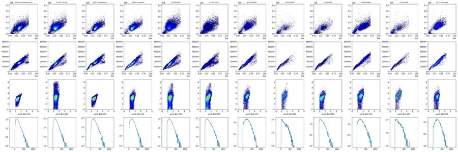
23
thinking
The caspase channel shows no signal separate from the controls, even in SYTOX-bright dead cells, though the live/dead stain itself works. I'm checking morphology and acquisition stability across all 78 wells next.
24
tool call · Bash
cd /task; cat > work/plot2.py <<'EOF'
import sys; sys.path.insert(0,'/task/work')
from load import *
import matplotlib; matplotlib.use('Agg'); import matplotlib.pyplot as plt
rows='ABCDEFG'
fig,ax=plt.subplots(7,12,figsize=(36,21))
fig2,ax2=plt.subplots(7,12,figsize=(36,21))
for r_i,r in enumerate(rows):
for c in range(1,13):
w=f'{r}{c}'
a=ax[r_i,c-1]; a2=ax2[r_i,c-1]
if w not in set(lay.well): a.axis('off'); a2.axis('off'); continue
d=load(w); d.columns=[x[0] for x in d.columns]
a.hist2d(d['FSC-A'],d['SSC-A'],bins=120,range=[[0,1.05e6],[0,1.05e6]],cmap='jet',cmin=1)
a.set_title(f"{w} {lay.set_index('well').loc[w,'sample'][:18]} n={len(d)}",fontsize=10)
t=d['Time']; h,e=np.histogram(t,bins=np.arange(0,17.5,0.5))
a2.step(e[:-1],h,where='post'); a2.set_ylim(0,None)
a2b=a2.twinx(); a2b.plot(t, d['FSC-A'].rolling(200,min_periods=1).median().values,'r',lw=.5)
a2.set_title(f"{w} n={len(d)}",fontsize=10)
fig.tight_layout(); fig.savefig('/task/work/p2_fscssc.png',dpi=40)
fig2.tight_layout(); fig2.savefig('/task/work/p2_time.png',dpi=40)
EOF
python3 work/plot2.py25
tool output
(Bash completed with no output)
26
tool call · Read
{
"file_path": "/task/work/p2_fscssc.png"
}27
tool output
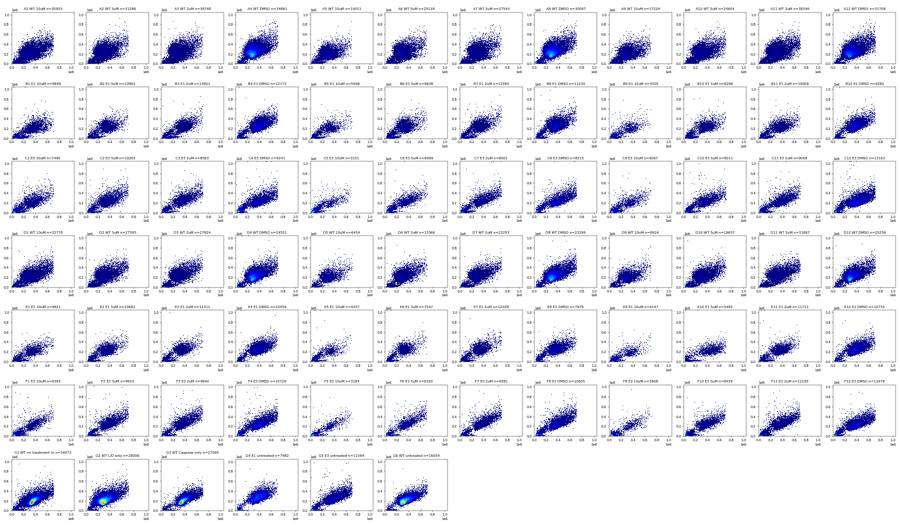
28
tool call · Read
{
"file_path": "/task/work/p2_time.png"
}29
tool output
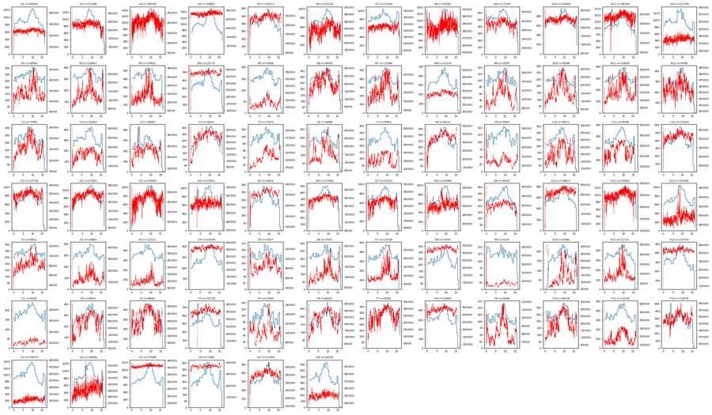
31
thinking
Event rates hold steady across the ~16.5 s acquisitions with 133–142 µL sample volumes, so no clogs or dry wells; camptothecin-treated KO wells have much more low-FSC/SSC debris. I'm now setting the cell, singlet and live/dead gates.
32
tool call · Bash
cd /task; cat > work/plot3.py <<'EOF'
import sys; sys.path.insert(0,'/task/work')
from load import *
import matplotlib; matplotlib.use('Agg'); import matplotlib.pyplot as plt
wells=['G1','G2','G3','G6','A4','A1','B12','B9','E1','E3','C12','C9']
fig,ax=plt.subplots(4,len(wells),figsize=(3*len(wells),12))
for i,w in enumerate(wells):
d=load(w); d.columns=[c[0] for c in d.columns]
ax[0,i].hist2d(d['FSC-A'],np.arcsinh(d['SSC-A']/1000),bins=150,range=[[0,1.05e6],[0,8]],cmap='jet',cmin=1); ax[0,i].set_title(w+' '+lay.set_index('well').loc[w,'sample'][:20],fontsize=8)
c=d[(d['FSC-A']>1e5)&(d['SSC-A']>3e4)]
ax[1,i].hist2d(c['FSC-A'],c['FSC-H'],bins=150,range=[[0,1.05e6],[0,6e5]],cmap='jet',cmin=1)
ax[1,i].plot([0,1e6],[0,1e6*0.42],'k-',lw=.5); ax[1,i].plot([0,1e6],[0,1e6*0.6],'k-',lw=.5)
ax[2,i].hist(np.log10(np.clip(c['BL2-A'],1,None)),bins=150,range=(0,6),histtype='step'); ax[2,i].set_yscale('log'); ax[2,i].set_xlabel('log10 BL2')
ax[3,i].hist2d(c['FSC-A'],c['BL1-A'],bins=120,range=[[0,1e6],[0,900]],cmap='jet',cmin=1); ax[3,i].set_xlabel('FSC-A vs BL1-A')
plt.tight_layout(); plt.savefig('/task/work/p3.png',dpi=55)
EOF
python3 work/plot3.py33
tool output
(Bash completed with no output)
34
tool call · Read
{
"file_path": "/task/work/p3.png"
}35
tool output
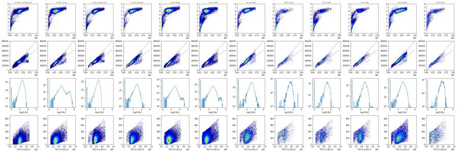
37
tool call · Bash
cd /task; python3 - <<'EOF'
import sys; sys.path.insert(0,'/task/work')
from load import *
out=[]
for w in lay.well:
d=load(w); d.columns=[c[0] for c in d.columns]
c=d[(d['FSC-A']>1e5)&(d['SSC-A']>3e4)]
r=c['FSC-H']/c['FSC-A']
out.append((w,len(d),d['FSC-A'].max(),(d['FSC-A']>690000).sum(), d['FSC-H'].max(), d['SSC-A'].max(), (d['SSC-A']>1.04e6).sum(), np.percentile(r,[1,5,25,50,75,95,99]).round(3)))
for o in out: print(o)
EOF38
tool output
('A1', 30920, 707042.0, 55, 441175.0, 1048105.0, 1, array([0.266, 0.355, 0.458, 0.498, 0.546, 0.665, 0.801]))
('A2', 31266, 706370.0, 34, 395997.0, 923717.0, 0, array([0.293, 0.398, 0.463, 0.503, 0.553, 0.665, 0.811]))
('A3', 38748, 705341.0, 23, 434958.0, 1033712.0, 0, array([0.29 , 0.396, 0.462, 0.501, 0.548, 0.687, 0.825]))
('A4', 34861, 710472.0, 40, 412856.0, 1048575.0, 1, array([0.281, 0.404, 0.463, 0.498, 0.538, 0.605, 0.717]))
('A5', 14011, 698538.0, 6, 396994.0, 1048575.0, 1, array([0.296, 0.389, 0.465, 0.512, 0.571, 0.715, 0.82 ]))
('A6', 25118, 704259.0, 13, 419584.0, 1048575.0, 1, array([0.288, 0.399, 0.462, 0.5 , 0.549, 0.668, 0.809]))
('A7', 27544, 703561.0, 19, 397212.0, 798480.0, 0, array([0.295, 0.398, 0.46 , 0.497, 0.544, 0.684, 0.822]))
('A8', 30067, 709534.0, 44, 392585.0, 1048575.0, 2, array([0.288, 0.412, 0.47 , 0.505, 0.546, 0.612, 0.755]))
('A9', 17224, 708799.0, 23, 397541.0, 1048575.0, 2, array([0.285, 0.387, 0.467, 0.515, 0.574, 0.706, 0.829]))
('A10', 24604, 709434.0, 36, 432313.0, 957740.0, 0, array([0.277, 0.385, 0.463, 0.502, 0.548, 0.648, 0.796]))
('A11', 38346, 708280.0, 49, 415643.0, 1048575.0, 2, array([0.277, 0.391, 0.463, 0.499, 0.542, 0.638, 0.806]))
('A12', 31708, 710978.0, 62, 426330.0, 1048575.0, 2, array([0.27 , 0.388, 0.468, 0.502, 0.541, 0.601, 0.699]))
('B1', 9849, 705050.0, 20, 369237.0, 1048575.0, 2, array([0.321, 0.396, 0.488, 0.546, 0.603, 0.777, 0.871]))
('B2', 10963, 703393.0, 13, 373806.0, 1048575.0, 1, array([0.333, 0.412, 0.474, 0.516, 0.566, 0.737, 0.839]))
('B3', 14921, 704964.0, 22, 391916.0, 851847.0, 0, array([0.34 , 0.413, 0.471, 0.513, 0.558, 0.733, 0.845]))
('B4', 12172, 705244.0, 33, 407709.0, 1048575.0, 2, array([0.324, 0.413, 0.473, 0.51 , 0.546, 0.619, 0.801]))
('B5', 5068, 701214.0, 5, 391019.0, 759936.0, 0, array([0.321, 0.41 , 0.491, 0.54 , 0.629, 0.785, 0.868]))
('B6', 9638, 709825.0, 14, 382877.0, 1048575.0, 1, array([0.309, 0.411, 0.479, 0.521, 0.57 , 0.753, 0.85 ]))
('B7', 13360, 707396.0, 15, 366320.0, 1048575.0, 2, array([0.313, 0.418, 0.478, 0.52 , 0.567, 0.747, 0.834]))
('B8', 11210, 705739.0, 23, 397348.0, 1048575.0, 1, array([0.318, 0.426, 0.488, 0.524, 0.562, 0.691, 0.819]))
('B9', 3505, 704489.0, 7, 385129.0, 1048575.0, 1, array([0.318, 0.415, 0.502, 0.556, 0.644, 0.785, 0.866]))
('B10', 8268, 704971.0, 9, 384763.0, 816790.0, 0, array([0.325, 0.42 , 0.491, 0.532, 0.573, 0.734, 0.822]))
('B11', 10609, 704738.0, 11, 387413.0, 1048575.0, 1, array([0.326, 0.429, 0.495, 0.535, 0.576, 0.737, 0.836]))
('B12', 9382, 707410.0, 35, 412219.0, 1048575.0, 1, array([0.296, 0.424, 0.488, 0.523, 0.557, 0.621, 0.781]))
('C1', 7495, 707054.0, 27, 387098.0, 1048575.0, 2, array([0.31 , 0.4 , 0.49 , 0.538, 0.601, 0.791, 0.867]))
('C2', 10263, 708109.0, 25, 404299.0, 1048575.0, 2, array([0.34 , 0.427, 0.492, 0.527, 0.564, 0.714, 0.826]))
('C3', 8563, 705618.0, 35, 384435.0, 1048575.0, 2, array([0.328, 0.437, 0.492, 0.523, 0.555, 0.677, 0.802]))
('C4', 9241, 706042.0, 47, 414496.0, 1048575.0, 5, array([0.326, 0.449, 0.511, 0.542, 0.574, 0.729, 0.828]))
('C5', 3151, 698763.0, 2, 419738.0, 889346.0, 0, array([0.351, 0.422, 0.513, 0.57 , 0.671, 0.808, 0.869]))
('C6', 6099, 708278.0, 19, 405012.0, 1048575.0, 1, array([0.334, 0.431, 0.5 , 0.536, 0.58 , 0.769, 0.864]))
('C7', 8001, 708192.0, 43, 394768.0, 1048575.0, 2, array([0.334, 0.438, 0.498, 0.533, 0.568, 0.737, 0.85 ]))
('C8', 8215, 707925.0, 59, 403223.0, 1048575.0, 2, array([0.35 , 0.449, 0.512, 0.543, 0.573, 0.715, 0.83 ]))
('C9', 4067, 706074.0, 17, 384587.0, 801424.0, 0, array([0.317, 0.412, 0.508, 0.552, 0.626, 0.798, 0.868]))
('C10', 8011, 712231.0, 39, 404817.0, 992590.0, 0, array([0.32 , 0.428, 0.502, 0.538, 0.573, 0.722, 0.832]))
('C11', 9008, 705477.0, 32, 388592.0, 1048575.0, 3, array([0.344, 0.432, 0.498, 0.533, 0.565, 0.709, 0.83 ]))
('C12', 13163, 708485.0, 63, 407630.0, 1048575.0, 3, array([0.322, 0.449, 0.512, 0.543, 0.569, 0.644, 0.8 ]))
('D1', 22778, 706571.0, 49, 448834.0, 823565.0, 0, array([0.264, 0.338, 0.469, 0.513, 0.558, 0.645, 0.789]))
('D2', 27593, 709330.0, 41, 419859.0, 1048575.0, 1, array([0.273, 0.399, 0.471, 0.507, 0.55 , 0.625, 0.802]))
('D3', 27824, 706304.0, 32, 393160.0, 783315.0, 0, array([0.28 , 0.409, 0.468, 0.501, 0.539, 0.614, 0.812]))
('D4', 24551, 709510.0, 48, 388539.0, 1048575.0, 2, array([0.282, 0.419, 0.482, 0.515, 0.551, 0.604, 0.688]))
('D5', 6454, 705131.0, 8, 404117.0, 989169.0, 0, array([0.288, 0.394, 0.468, 0.51 , 0.558, 0.685, 0.827]))
('D6', 17066, 710129.0, 15, 441361.0, 1027386.0, 0, array([0.283, 0.401, 0.472, 0.511, 0.553, 0.635, 0.796]))
('D7', 23253, 705078.0, 23, 421552.0, 1045857.0, 1, array([0.286, 0.416, 0.474, 0.51 , 0.549, 0.627, 0.828]))
('D8', 23299, 706975.0, 61, 421346.0, 1048575.0, 1, array([0.278, 0.392, 0.48 , 0.514, 0.551, 0.609, 0.746]))
('D9', 8616, 705196.0, 11, 396447.0, 844130.0, 0, array([0.289, 0.393, 0.472, 0.516, 0.562, 0.684, 0.819]))
('D10', 19657, 708767.0, 25, 461733.0, 1000588.0, 0, array([0.281, 0.401, 0.473, 0.513, 0.553, 0.621, 0.798]))
('D11', 31867, 709351.0, 34, 454034.0, 996208.0, 0, array([0.286, 0.413, 0.473, 0.51 , 0.551, 0.614, 0.797]))
('D12', 25256, 708384.0, 51, 424207.0, 1048575.0, 1, array([0.28 , 0.416, 0.482, 0.516, 0.556, 0.611, 0.715]))
('E1', 9821, 703050.0, 12, 401528.0, 1048575.0, 1, array([0.322, 0.427, 0.498, 0.543, 0.593, 0.79 , 0.869]))
('E2', 10681, 705822.0, 10, 387841.0, 707244.0, 0, array([0.351, 0.434, 0.488, 0.526, 0.568, 0.717, 0.838]))
('E3', 12311, 702505.0, 7, 376946.0, 1005489.0, 0, array([0.385, 0.433, 0.486, 0.522, 0.561, 0.726, 0.837]))
('E4', 10059, 708263.0, 12, 394388.0, 1048575.0, 1, array([0.359, 0.435, 0.491, 0.525, 0.557, 0.622, 0.796]))
('E5', 4437, 706715.0, 3, 374629.0, 1048575.0, 2, array([0.322, 0.438, 0.506, 0.552, 0.65 , 0.798, 0.858]))
('E6', 7547, 700406.0, 5, 383557.0, 1048575.0, 3, array([0.317, 0.427, 0.482, 0.521, 0.568, 0.774, 0.853]))
('E7', 12028, 703278.0, 19, 390974.0, 881165.0, 0, array([0.339, 0.432, 0.488, 0.526, 0.568,
… [2,530 more characters not shown]40
thinking
Saturation is negligible: FSC-A tops out near 710,000, but fewer than 0.3% of events sit there and at most 6 per file hit full scale. I'm choosing the live/dead and caspase thresholds from the controls next.
41
tool call · Bash
cd /task; cat > work/plot4.py <<'EOF'
import sys; sys.path.insert(0,'/task/work')
from load import *
import matplotlib; matplotlib.use('Agg'); import matplotlib.pyplot as plt
fig,ax=plt.subplots(2,4,figsize=(24,10)); ax=ax.ravel()
groups={'G ctrl':['G1','G2','G3','G4','G5','G6'],'WT':[f'{r}{c}' for r in 'AD' for c in range(1,13)],'E1':[f'{r}{c}' for r in 'BE' for c in range(1,13)],'E3':[f'{r}{c}' for r in 'CF' for c in range(1,13)]}
res={}
for gi,(g,ws) in enumerate(groups.items()):
for w in ws:
d=load(w); d.columns=[c[0] for c in d.columns]
c=d[(d['FSC-A']>1e5)&(d['SSC-A']>3e4)]
r=c['FSC-H']/c['FSC-A']; s=c[(r>0.4)&(r<0.8)]
h,e=np.histogram(np.log10(np.clip(s['BL2-A'],1,None)),bins=120,range=(0,6))
ax[gi].plot(e[:-1],h/h.sum(),label=w if g=='G ctrl' else None,lw=1.5 if g=='G ctrl' else .5)
h,e=np.histogram(s['BL1-A'],bins=100,range=(0,1000))
ax[gi+4].plot(e[:-1],h/h.sum(),label=w if g=='G ctrl' else None,lw=1.5 if g=='G ctrl' else .5)
res[w]=s
ax[gi].set_yscale('log'); ax[gi].set_title(g+' BL2 singlets'); ax[gi+4].set_yscale('log'); ax[gi+4].set_title(g+' BL1 singlets')
for t in [3.7,3.9]: ax[gi].axvline(t,color='k',lw=.5)
ax[0].legend(); ax[4].legend()
plt.tight_layout(); plt.savefig('/task/work/p4.png',dpi=50)
g1=res['G1']; g1l=g1[g1['BL2-A']<7000]
print('G1 BL1 pct', np.percentile(g1l['BL1-A'],[90,95,98,99,99.5,99.9]))
g3=res['G3']; g3l=g3[g3['BL2-A']<7000]
print('G3 BL1 pct', np.percentile(g3l['BL1-A'],[90,95,98,99,99.5,99.9]))
g6=res['G6']; g6l=g6[g6['BL2-A']<7000]
print('G6 BL1 pct', np.percentile(g6l['BL1-A'],[90,95,98,99,99.5,99.9]))
g2=res['G2'];
for t in [4000,5000,6000,7000,8000,10000]: print(t, 'G2 dead%',(g2['BL2-A']>=t).mean()*100, 'G1',(g1['BL2-A']>=t).mean()*100,'G3',(g3['BL2-A']>=t).mean()*100)
EOF
python3 work/plot4.py42
tool output
G1 BL1 pct [263. 311. 383. 436. 489.02 601.502] G3 BL1 pct [321. 379. 448. 497. 537.695 638.156] G6 BL1 pct [330. 383. 451.36 503. 543.18 664.09] 4000 G2 dead% 12.029081295439523 G1 0.0032787960260992166 G3 0.0 5000 G2 dead% 10.796625325609424 G1 0.0 G3 0.0 6000 G2 dead% 9.968508222852922 G1 0.0 G3 0.0 7000 G2 dead% 9.327009058745773 G1 0.0 G3 0.0 8000 G2 dead% 8.864352085844251 G1 0.0 G3 0.0 10000 G2 dead% 8.304498269896193 G1 0.0 G3 0.0
43
tool call · Read
{
"file_path": "/task/work/p4.png"
}44
tool output
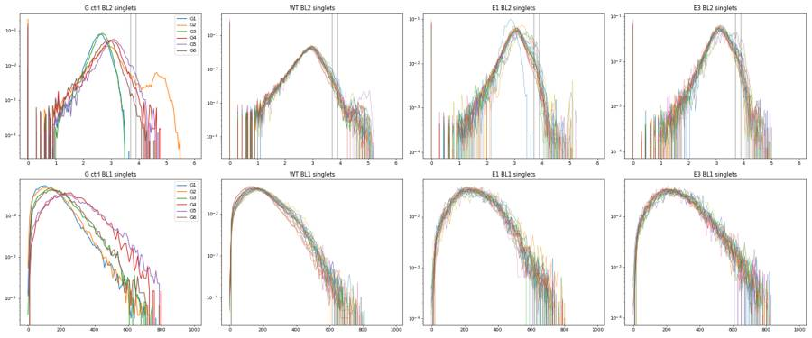
46
thinking
BL2 gating looks clean: a dead peak near 50,000 with a dip at 10,000, so events below 10,000 count as live. Next I'm checking the cells and singlets gate shapes.
47
tool call · Bash
cd /task; cat > work/plot5.py <<'EOF'
import sys; sys.path.insert(0,'/task/work')
from load import *
import matplotlib; matplotlib.use('Agg'); import matplotlib.pyplot as plt
cells=[(9e4,2.5e4),(7.4e5,2.5e4),(7.4e5,1.048e6),(2.0e5,1.048e6),(9e4,3.0e5)]
sing=[(9e4,3.4e4),(7.4e5,2.9e5),(7.4e5,5.9e5),(9e4,8.0e4)]
wells=['G1','G2','A4','A1','A5','D5','B12','B9','E1','E3','C9','F9']
fig,ax=plt.subplots(3,len(wells),figsize=(3*len(wells),9))
for i,w in enumerate(wells):
d=load(w); d.columns=[c[0] for c in d.columns]
ax[0,i].hist2d(d['FSC-A'],np.arcsinh(d['SSC-A']/1000),bins=150,range=[[0,1.05e6],[0,8]],cmap='jet',cmin=1); ax[0,i].set_title(w+' '+lay.set_index('well').loc[w,'sample'][:20],fontsize=8)
px=[p[0] for p in cells+cells[:1]]; py=[np.arcsinh(p[1]/1000) for p in cells+cells[:1]]
ax[0,i].plot(px,py,'k-')
ax[1,i].hist2d(d['FSC-A'],d['SSC-A'],bins=150,range=[[0,1.05e6],[0,1.05e6]],cmap='jet',cmin=1); ax[1,i].plot(px,[p[1] for p in cells+cells[:1]],'k-')
from matplotlib.path import Path
m=Path(cells).contains_points(d[['FSC-A','SSC-A']].values); c=d[m]
ax[2,i].hist2d(c['FSC-A'],c['FSC-H'],bins=150,range=[[0,1.05e6],[0,6e5]],cmap='jet',cmin=1)
ax[2,i].plot([p[0] for p in sing+sing[:1]],[p[1] for p in sing+sing[:1]],'k-')
m2=Path(sing).contains_points(c[['FSC-A','FSC-H']].values)
ax[2,i].set_title(f'cells {m.mean()*100:.1f}% sing {m2.mean()*100:.1f}%',fontsize=8)
plt.tight_layout(); plt.savefig('/task/work/p5.png',dpi=55)
EOF
python3 work/plot5.py48
tool output
(Bash completed with no output)
49
tool call · Read
{
"file_path": "/task/work/p5.png"
}50
tool output
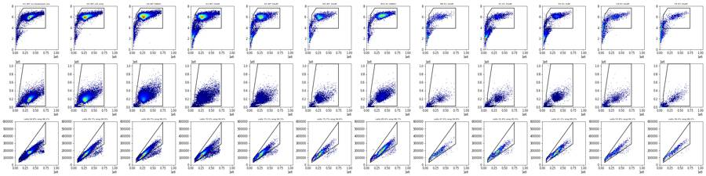
52
thinking
Gating looks right on the controls and treated wells, so I'm now building the FlowKit strategy and running it across all 78 files.
53
tool call · Bash
cd /task; cat > work/build_gates.py <<'EOF'
import flowkit as fk, pandas as pd, numpy as np, sys
from flowkit import Dimension
from flowkit.gates import PolygonGate, RectangleGate
BL2_DEAD = 10000.0 # SYTOX AAdvanced (BL2-A) live/dead cut: valley between live and dead peaks in G2 (L/D-only)
BL1_POS = 500.0 # CellEvent caspase-3/7 (BL1-A) cut: ~99.5th pct of unstained G1 live singlets (489)
gs = fk.GatingStrategy()
cells = PolygonGate('cells',
dimensions=[Dimension('FSC-A', compensation_ref='uncompensated'), Dimension('SSC-A', compensation_ref='uncompensated')],
vertices=[(9.0e4, 2.5e4), (7.4e5, 2.5e4), (7.4e5, 1.048e6), (2.0e5, 1.048e6), (9.0e4, 3.0e5)])
gs.add_gate(cells, gate_path=('root',))
sing = PolygonGate('singlets',
dimensions=[Dimension('FSC-A', compensation_ref='uncompensated'), Dimension('FSC-H', compensation_ref='uncompensated')],
vertices=[(9.0e4, 3.4e4), (7.4e5, 2.9e5), (7.4e5, 5.9e5), (9.0e4, 8.0e4)])
gs.add_gate(sing, gate_path=('root','cells'))
live = RectangleGate('live', dimensions=[Dimension('BL2-A', compensation_ref='uncompensated', range_max=BL2_DEAD)])
gs.add_gate(live, gate_path=('root','cells','singlets'))
dead = RectangleGate('dead', dimensions=[Dimension('BL2-A', compensation_ref='uncompensated', range_min=BL2_DEAD)])
gs.add_gate(dead, gate_path=('root','cells','singlets'))
casp = RectangleGate('caspase_pos', dimensions=[Dimension('BL1-A', compensation_ref='uncompensated', range_min=BL1_POS)])
gs.add_gate(casp, gate_path=('root','cells','singlets','live'))
dcasp = RectangleGate('dead_caspase_pos', dimensions=[Dimension('BL1-A', compensation_ref='uncompensated', range_min=BL1_POS)])
gs.add_gate(dcasp, gate_path=('root','cells','singlets','dead'))
with open('/task/outputs/gates.xml','wb') as fh:
fk.export_gatingml(gs, fh)
gs2 = fk.parse_gating_xml('/task/outputs/gates.xml')
print(gs2.get_gate_ids())
EOF
python3 work/build_gates.py54
tool output (error)
Exit code 1
Traceback (most recent call last):
File "/task/work/build_gates.py", line 3, in <module>
from flowkit.gates import PolygonGate, RectangleGate
ModuleNotFoundError: No module named 'flowkit.gates'55
tool call · Bash
cd /task; python3 -c "import flowkit as fk; print([x for x in dir(fk) if not x.startswith('_')]); print(dir(fk.gates) if hasattr(fk,'gates') else 'nogates')"56
tool output
['Dimension', 'GatingStrategy', 'Matrix', 'QuadrantDivider', 'RatioDimension', 'Sample', 'Session', 'Workspace', 'exceptions', 'export_gatingml', 'extract_wsp_sample_data', 'gates', 'generate_transforms', 'load_samples', 'parse_gating_xml', 'parse_wsp', 'read_multi_dataset_fcs', 'transforms'] ['BooleanGate', 'EllipsoidGate', 'PolygonGate', 'Quadrant', 'QuadrantGate', 'RectangleGate', '__all__', '__builtins__', '__cached__', '__doc__', '__file__', '__loader__', '__name__', '__package__', '__path__', '__spec__', '_base_gate', '_gates', '_gml_gates', '_wsp_gates']
57
tool call · Bash
cd /task; sed -i 's/^from flowkit.gates import PolygonGate, RectangleGate/PolygonGate = fk.gates.PolygonGate; RectangleGate = fk.gates.RectangleGate/' work/build_gates.py && python3 work/build_gates.py && head -c 1500 outputs/gates.xml
58
tool output
[('cells', ('root',)), ('singlets', ('root', 'cells')), ('live', ('root', 'cells', 'singlets')), ('caspase_pos', ('root', 'cells', 'singlets', 'live')), ('dead', ('root', 'cells', 'singlets')), ('dead_caspase_pos', ('root', 'cells', 'singlets', 'dead'))]
<?xml version='1.0' encoding='UTF-8'?>
<gating:Gating-ML xmlns:gating="http://www.isac-net.org/std/Gating-ML/v2.0/gating" xmlns:data-type="http://www.isac-net.org/std/Gating-ML/v2.0/datatypes" xmlns:transforms="http://www.isac-net.org/std/Gating-ML/v2.0/transformations">
<gating:PolygonGate gating:id="cells">
<gating:dimension gating:compensation-ref="uncompensated">
<data-type:fcs-dimension data-type:name="FSC-A"/>
</gating:dimension>
<gating:dimension gating:compensation-ref="uncompensated">
<data-type:fcs-dimension data-type:name="SSC-A"/>
</gating:dimension>
<gating:vertex>
<gating:coordinate data-type:value="90000.0"/>
<gating:coordinate data-type:value="25000.0"/>
</gating:vertex>
<gating:vertex>
<gating:coordinate data-type:value="740000.0"/>
<gating:coordinate data-type:value="25000.0"/>
</gating:vertex>
<gating:vertex>
<gating:coordinate data-type:value="740000.0"/>
<gating:coordinate data-type:value="1048000.0"/>
</gating:vertex>
<gating:vertex>
<gating:coordinate data-type:value="200000.0"/>
<gating:coordinate data-type:value="1048000.0"/>
</gating:vertex>
<gating:vertex>
<gating:coordinate data-type:value="90000.0"/>
<gating:coordinate data-type:value="300000.0"/>
</gating:vertex>
</gating:PolygonGate>
<gating:PolygonGate gating:id="singlets" gating:parent_id="cells">
<gating:dimension gating:compensation-ref="uncompensated">60
agent
Gates exported and reloaded. Next I'm generating counts from the saved `gates.xml` on every file.
61
tool call · Bash
cd /task; cat > work/counts.py <<'EOF'
import flowkit as fk, pandas as pd, numpy as np
lay = pd.read_csv('/task/inputs/plate_layout.csv')
gs = fk.parse_gating_xml('/task/outputs/gates.xml')
roles={'cells':'cells','singlets':'singlets','live':'live','caspase_pos':'marker_positive','dead':'other','dead_caspase_pos':'other'}
order=['cells','singlets','live','caspase_pos','dead','dead_caspase_pos']
rows=[]; extra=[]
for _,r in lay.iterrows():
s=fk.Sample('/task/inputs/raw/'+r.file)
res=gs.gate_sample(s)
rep=res.report
n=s.event_count
rows.append(dict(file=r.file,well=r.well,population='all_events',role='other',parent='none',count=n,pct_of_parent=''))
cnt={'all_events':n}
for g in order:
row=rep[rep.gate_name==g].iloc[0]
par=row.gate_path[-1] if row.gate_path[-1]!='root' else 'all_events'
c=int(row['count']); cnt[g]=c
pc = 100*c/cnt[par] if cnt[par]>0 else float('nan')
rows.append(dict(file=r.file,well=r.well,population=g,role=roles[g],parent=par,count=c,pct_of_parent=round(pc,4)))
# per-well intensity stats on live singlets (for supporting metrics)
df=s.as_dataframe(source='raw'); df.columns=[c[0] for c in df.columns]
m=res.get_gate_membership('live')
lv=df[m]
md=res.get_gate_membership('dead'); dd=df[md]
extra.append(dict(well=r.well, live_bl1_median=lv['BL1-A'].median(), live_fsc_median=lv['FSC-A'].median(),
live_bl1_per_fsc_median=(lv['BL1-A']/lv['FSC-A']*1e3).median(), live_bl1_p99=lv['BL1-A'].quantile(.99),
live_bl2_median=lv['BL2-A'].median(), dead_bl1_median=dd['BL1-A'].median() if len(dd) else np.nan,
all_bl1_max=df['BL1-A'].max(), all_bl1_n_gt1000=int((df['BL1-A']>1000).sum())))
out=pd.DataFrame(rows)[['file','well','population','role','parent','count','pct_of_parent']]
out.to_csv('/task/outputs/counts.csv',index=False)
pd.DataFrame(extra).to_csv('/task/work/intensity_stats.csv',index=False)
print(out.head(14))
EOF
python3 work/counts.py62
tool output
file well ... count pct_of_parent 0 Caspase-assay-2-mlk(1)_caspase_Group_A1.fcs A1 ... 30920 1 Caspase-assay-2-mlk(1)_caspase_Group_A1.fcs A1 ... 21796 70.4916 2 Caspase-assay-2-mlk(1)_caspase_Group_A1.fcs A1 ... 20190 92.6317 3 Caspase-assay-2-mlk(1)_caspase_Group_A1.fcs A1 ... 19869 98.4101 4 Caspase-assay-2-mlk(1)_caspase_Group_A1.fcs A1 ... 285 1.4344 5 Caspase-assay-2-mlk(1)_caspase_Group_A1.fcs A1 ... 321 1.5899 6 Caspase-assay-2-mlk(1)_caspase_Group_A1.fcs A1 ... 19 5.919 7 Caspase-assay-2-mlk(1)_caspase_Group_A2.fcs A2 ... 31266 8 Caspase-assay-2-mlk(1)_caspase_Group_A2.fcs A2 ... 21372 68.3554 9 Caspase-assay-2-mlk(1)_caspase_Group_A2.fcs A2 ... 20364 95.2835 10 Caspase-assay-2-mlk(1)_caspase_Group_A2.fcs A2 ... 20054 98.4777 11 Caspase-assay-2-mlk(1)_caspase_Group_A2.fcs A2 ... 233 1.1619 12 Caspase-assay-2-mlk(1)_caspase_Group_A2.fcs A2 ... 310 1.5223 13 Caspase-assay-2-mlk(1)_caspase_Group_A2.fcs A2 ... 6 1.9355 [14 rows x 7 columns]
64
tool call · Bash
cd /task; python3 - <<'EOF'
import pandas as pd, numpy as np
c=pd.read_csv('/task/outputs/counts.csv'); lay=pd.read_csv('/task/inputs/plate_layout.csv')
w=c.pivot(index='well',columns='population',values='count')
p=c.pivot(index='well',columns='population',values='pct_of_parent')
st=pd.read_csv('/task/work/intensity_stats.csv').set_index('well')
t=pd.DataFrame({'n':w.all_events,'cells':w.cells,'pct_cells':p.cells.round(1),'pct_sing':p.singlets.round(1),'live':w.live,'pct_live':p.live.round(2),
'casp':w.caspase_pos,'pct_casp':p.caspase_pos.round(2),'dead':w.dead,'pct_dead':p.dead.round(2),'dcasp%':p.dead_caspase_pos.round(1)}).join(st[['live_bl1_median','live_fsc_median','live_bl1_per_fsc_median','dead_bl1_median','all_bl1_max','all_bl1_n_gt1000']])
t=t.join(lay.set_index('well')[['sample','conditioned_media']])
t=t.loc[lay.well]
pd.set_option('display.width',300); pd.set_option('display.max_rows',100)
print(t.round(2).to_string())
EOF65
tool output
n cells pct_cells pct_sing live pct_live casp pct_casp dead pct_dead dcasp% live_bl1_median live_fsc_median live_bl1_per_fsc_median dead_bl1_median all_bl1_max all_bl1_n_gt1000 sample conditioned_media well A1 30920 21796 70.5 92.6 19869 98.41 285 1.43 321 1.59 5.9 180.0 279957.0 0.62 345.0 805.0 0 WT 10uM 24hr conditioned media A2 31266 21372 68.4 95.3 20054 98.48 233 1.16 310 1.52 1.9 177.0 276492.5 0.63 329.0 795.0 0 WT 5uM 24hr conditioned media A3 38748 23596 60.9 94.7 22099 98.90 248 1.12 246 1.10 3.3 177.0 279299.0 0.63 322.0 804.0 0 WT 2uM 24hr conditioned media A4 34861 33022 94.7 96.2 31406 98.85 181 0.58 365 1.15 1.9 160.0 286594.5 0.54 327.0 797.0 0 WT DMSO 24hr conditioned media A5 14011 9955 71.1 94.3 9118 97.13 137 1.50 269 2.87 4.1 191.0 283529.0 0.67 359.0 750.0 0 WT 10uM 48hr conditioned media A6 25118 17582 70.0 95.3 16541 98.69 185 1.12 220 1.31 4.1 177.0 276932.0 0.63 329.0 794.0 0 WT 5uM 48hr conditioned media A7 27544 18252 66.3 95.0 17158 98.92 174 1.01 187 1.08 3.7 178.0 277201.5 0.63 332.0 803.0 0 WT 2uM 48hr conditioned media A8 30067 28256 94.0 96.3 26968 99.08 141 0.52 250 0.92 4.8 160.0 289605.0 0.54 321.0 810.0 0 WT DMSO 48hr conditioned media A9 17224 11683 67.8 94.0 10892 99.14 195 1.79 95 0.86 3.2 211.0 284240.0 0.73 339.0 769.0 0 WT 10uM No conditioned media A10 24604 17887 72.7 94.2 16667 98.88 221 1.33 189 1.12 3.7 188.0 282485.0 0.66 335.0 785.0 0 WT 5uM No conditioned media A11 38346 25879 67.5 94.5 24259 99.19 280 1.15 197 0.81 6.6 183.0 285052.0 0.63 342.0 810.0 0 WT 2uM No conditioned media A12 31708 29716 93.7 94.8 27841 98.78 175 0.63 344 1.22 5.8 162.0 292098.0 0.53 325.5 787.0 0 WT DMSO No conditioned media B1 9849 4561 46.3 93.2 4252 99.98 273 6.42 1 0.02 100.0 270.5 359658.5 0.80 500.0 803.0 0 E1 10uM 24hr conditioned media B2 10963 5159 47.1 96.2 4924 99.21 199 4.04 39 0.79 5.1 256.0 339966.0 0.77 349.0 804.0 0 E1 5uM 24hr conditioned media B3 14921 6814 45.7 96.2 6542 99.80 294 4.49 13 0.20 15.4 255.0 361908.0 0.71 344.0 802.0 0 E1 2uM 24hr conditioned media B4 12172 10438 85.8 96.9 10053 99.39 338 3.36 62 0.61 16.1 241.0 397716.0 0.61 386.5 801.0 0 E1 DMSO 24hr conditioned media B5 5068 2511 49.5 94.4 2311 97.51 77 3.33 59 2.49 10.2 259.0 308440.0 0.90 349.0 712.0 0 E1 10uM 48hr conditioned media B6 9638 5668 58.8 95.6 5350 98.69 131 2.45 71 1.31 4.2 241.0 323901.5 0.76 340.0 781.0 0 E1 5uM 48hr conditioned media B7 13360 6743 50.5 96.6 6450 99.06 177 2.74 61 0.94 16.4 245.0 331714.0 0.74 375.0 795.0 0 E1 2uM 48hr conditioned media B8 11210 9101 81.2 97.3 8704 98.27 181 2.08 153 1.73 17.6 232.0 356952.5 0.64 378.0 796.0 0 E1 DMSO 48hr conditioned media B9 3505 1660 47.4 94.8 1523 96.76 78 5.12 51 3.24 3.9 284.0 317180.0 0.99 385.0 770.0 0 E1 10uM No conditioned media B10 8268 4320 52.2 96.0 4092 98.70 198 4.84 54 1.30 18.5 264. … [14,479 more characters not shown]
67
thinking
All 78 files passed gating with no BL1 event above 1,000, and the SYTOX-positive dead cells show only a faint BL1 signal that sits inside autofluorescence range. I'm now checking whether something is capping BL1 or the signal is just very dim.
68
tool call · Bash
cd /task; cat > work/plot6.py <<'EOF'
import sys; sys.path.insert(0,'/task/work')
from load import *
import matplotlib; matplotlib.use('Agg'); import matplotlib.pyplot as plt
import flowkit as fk
gs=fk.parse_gating_xml('/task/outputs/gates.xml')
pool={}
for w in lay.well:
f=lay.loc[lay.well==w,'file'].iloc[0]; s=fk.Sample('/task/inputs/raw/'+f); r=gs.gate_sample(s)
d=s.as_dataframe(source='raw'); d.columns=[c[0] for c in d.columns]
pool[w]=d[r.get_gate_membership('singlets')]
stained=[w for w in lay.well if w[0] in 'ABCDEF']
S=pd.concat([pool[w] for w in stained])
fig,ax=plt.subplots(1,5,figsize=(26,5))
for k,(nm,dd) in enumerate([('G1 unstained',pool['G1']),('G2 L/D only',pool['G2']),('G3 casp only',pool['G3']),('pooled A-F stained',S)]):
ax[k].hist2d(np.log10(np.clip(dd['BL2-A'],10,None)),dd['BL1-A'],bins=[120,100],range=[[1,6],[0,1000]],cmap='jet',cmin=1,norm=matplotlib.colors.LogNorm()); ax[k].set_title(nm); ax[k].set_xlabel('log10 BL2-A (SYTOX)'); ax[k].set_ylabel('BL1-A (CellEvent)')
ax[k].axvline(4,color='k'); ax[k].axhline(500,color='k')
dg2=pool['G2'][pool['G2']['BL2-A']>=1e4]; ds=S[S['BL2-A']>=1e4]
ax[4].hist(dg2['BL1-A'],bins=50,range=(0,1000),density=True,histtype='step',label=f'G2 dead (no CellEvent) n={len(dg2)}')
ax[4].hist(ds['BL1-A'],bins=50,range=(0,1000),density=True,histtype='step',label=f'A-F dead (CellEvent) n={len(ds)}')
ax[4].legend(); ax[4].set_xlabel('BL1-A')
plt.tight_layout(); plt.savefig('/task/work/p6.png',dpi=55)
d=load('A1'); d.columns=[c[0] for c in d.columns]
print('BL1-H max', d['BL1-H'].max(), 'BL1-W unique', d['BL1-W'].unique()[:5])
print(np.corrcoef(d['BL1-A'],d['BL1-H'])[0,1], (d['BL1-A']/d['BL1-H'].clip(1)).median())
print('pooled stained singlets BL1 pct', np.percentile(S['BL1-A'],[50,99,99.9,100]), 'n', len(S))
print('dead stained BL1 pct', np.percentile(ds['BL1-A'],[25,50,75,95,99,100]))
print('dead G2 BL1 pct', np.percentile(dg2['BL1-A'],[25,50,75,95,99,100]))
EOF
python3 work/plot6.py69
tool output
BL1-H max 643.0 BL1-W unique [0.] 0.7831464106902605 1.2232142857142858 pooled stained singlets BL1 pct [206. 563. 704. 830.] n 672293 dead stained BL1 pct [285. 356. 423. 571. 693.68 818. ] dead G2 BL1 pct [ 82. 138. 207. 327.1 431.71 714. ]
70
tool call · Read
{
"file_path": "/task/work/p6.png"
}71
tool output
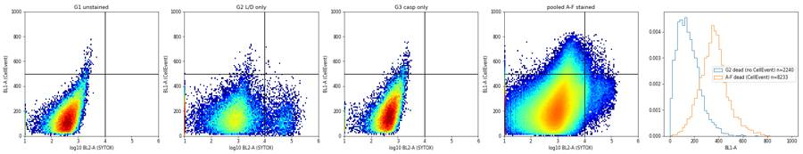
73
thinking
Stained wells hit a flat ceiling in BL1 near 800–830 at every SYTOX level, and FSC-A caps near 710,000 at 20 V, which points to a low-voltage detector limit. I'm checking whether events pile up at that edge next.
74
tool call · Bash
cd /task; cat > work/plot7.py <<'EOF'
import sys; sys.path.insert(0,'/task/work')
from load import *
import matplotlib; matplotlib.use('Agg'); import matplotlib.pyplot as plt
ws=[w for w in lay.well if w[0] in 'ABCDEF']
D=pd.concat([load(w).set_axis([c[0] for c in load('A1').columns],axis=1) for w in ws])
G1=load('G1'); G1.columns=[c[0] for c in G1.columns]
fig,ax=plt.subplots(1,5,figsize=(28,5))
ax[0].hist(D['BL1-A'],bins=np.arange(500,900,5),histtype='step',label='A-F pooled'); ax[0].set_yscale('log'); ax[0].set_title('BL1-A top region');
ax[1].hist2d(D['BL1-H'],D['BL1-A'],bins=150,cmap='jet',cmin=1,norm=matplotlib.colors.LogNorm()); ax[1].set_xlabel('BL1-H'); ax[1].set_ylabel('BL1-A')
ax[2].hist2d(D['FSC-A'],D['BL1-A'],bins=150,cmap='jet',cmin=1,norm=matplotlib.colors.LogNorm()); ax[2].set_xlabel('FSC-A'); ax[2].set_ylabel('BL1-A')
ax[3].hist(D['FSC-A'],bins=np.arange(5e5,7.3e5,2e3),histtype='step'); ax[3].set_yscale('log'); ax[3].set_title('FSC-A top region')
ax[4].hist2d(D['FSC-H'],D['FSC-A'],bins=150,cmap='jet',cmin=1,norm=matplotlib.colors.LogNorm()); ax[4].set_xlabel('FSC-H'); ax[4].set_ylabel('FSC-A')
plt.tight_layout(); plt.savefig('/task/work/p7.png',dpi=55)
print('BL1-A counts >= 800:', (D['BL1-A']>=800).sum(), ' >=820', (D['BL1-A']>=820).sum(), 'n', len(D))
print('BL2 max pooled', D['BL2-A'].max(), 'BL2-H max', D['BL2-H'].max(), 'BL1-H max', D['BL1-H'].max(), 'SSC-H max', D['SSC-H'].max())
EOF
python3 work/plot7.py75
tool output
BL1-A counts >= 800: 61 >=820 9 n 1026202 BL2 max pooled 199435.0 BL2-H max 120208.0 BL1-H max 1292.0 SSC-H max 1048575.0
76
tool call · Read
{
"file_path": "/task/work/p7.png"
}77
tool output
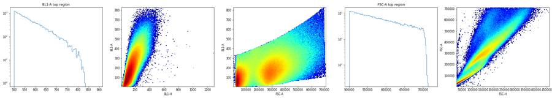
79
thinking
BL1 has no bright population: it forms a narrow band rising with FSC-A, its apparent maximum of about 830 is just where FSC-A tops out. I'm checking each well's morphology against its replicates next, since B6 looks different from the other E1 wells.
80
tool call · Bash
cd /task; cat > work/features.py <<'EOF'
import sys; sys.path.insert(0,'/task/work')
import flowkit as fk, pandas as pd, numpy as np
lay=pd.read_csv('/task/inputs/plate_layout.csv')
gs=fk.parse_gating_xml('/task/outputs/gates.xml')
rows=[]
for _,r in lay.iterrows():
s=fk.Sample('/task/inputs/raw/'+r.file); res=gs.gate_sample(s)
d=s.as_dataframe(source='raw'); d.columns=[c[0] for c in d.columns]
lv=d[res.get_gate_membership('live')]
rows.append(dict(well=r.well, line=r.cell_line, dose=r.camptothecin, cm=r.conditioned_media.split(' ')[0],
fsc=lv['FSC-A'].median(), ssc=lv['SSC-A'].median(), ssc_fsc=(lv['SSC-A']/lv['FSC-A']).median(), hw=(lv['FSC-H']/lv['FSC-A']).median(),
bl2=lv['BL2-A'].median(), bl1=lv['BL1-A'].median(), ncells=int(res.get_gate_membership('cells').sum()), pctcells=res.get_gate_membership('cells').mean()*100))
f=pd.DataFrame(rows); f.to_csv('/task/work/features.csv',index=False)
pd.set_option('display.width',250); pd.set_option('display.max_rows',100)
f['grp']=f.line+'_'+f.dose
# z-score within line x dose group
for c in ['fsc','ssc','ssc_fsc','hw','bl2','bl1','pctcells']:
g=f.groupby('grp')[c]; f['z_'+c]=(f[c]-g.transform('median'))/g.transform(lambda x:(x-x.median()).abs().median()*1.4826+1e-9)
print(f.sort_values(['line','dose','cm']).round(3).to_string())
EOF
python3 work/features.py81
tool output
well line dose cm fsc ssc ssc_fsc hw bl2 bl1 ncells pctcells grp z_fsc z_ssc z_ssc_fsc z_hw z_bl2 z_bl1 z_pctcells 12 B1 E1 10uM 24hr 359658.5 205882.5 0.582 0.551 718.0 270.5 4561 46.309 E1_10uM 3.597 1.201 -0.506 -0.279 -1.274 0.352 0.518 48 E1 E1 10uM 24hr 325670.5 199566.5 0.603 0.548 1115.0 266.0 3130 31.870 E1_10uM 0.936 0.113 0.394 -0.622 -0.478 -0.176 -1.429 16 B5 E1 10uM 48hr 308440.0 198249.0 0.662 0.544 1281.0 259.0 2511 49.546 E1_10uM -0.413 -0.113 2.920 -0.977 -0.145 -0.997 0.954 52 E5 E1 10uM 48hr 310260.5 199765.5 0.679 0.557 1426.0 269.0 1714 38.630 E1_10uM -0.271 0.148 3.680 0.279 0.145 0.176 -0.518 20 B9 E1 10uM No 317180.0 188622.0 0.585 0.561 1788.0 284.0 1660 47.361 E1_10uM 0.271 -1.772 -0.394 0.727 0.871 1.935 0.659 56 E9 E1 10uM No 279524.0 161539.0 0.575 0.582 1930.5 252.0 1549 37.352 E1_10uM -2.677 -6.436 -0.843 2.857 1.157 -1.818 -0.690 14 B3 E1 2uM 24hr 361908.0 224950.5 0.610 0.517 1063.0 255.0 6814 45.667 E1_2uM 0.834 -0.475 -0.670 -0.980 -0.729 -0.056 0.169 50 E3 E1 2uM 24hr 344522.0 233144.0 0.663 0.523 1072.5 267.0 5054 41.053 E1_2uM -0.294 0.475 0.514 -0.269 -0.591 1.293 -0.687 18 B7 E1 2uM 48hr 331714.0 236563.0 0.705 0.523 1065.0 245.0 6743 50.472 E1_2uM -1.126 0.871 1.440 -0.369 -0.700 -1.180 1.059 54 E7 E1 2uM 48hr 330362.5 240013.5 0.720 0.528 1158.0 256.0 5274 43.848 E1_2uM -1.214 1.271 1.771 0.269 0.649 0.056 -0.169 22 B11 E1 2uM No 353591.0 218383.0 0.609 0.537 1182.0 254.0 5500 51.843 E1_2uM 0.294 -1.236 -0.679 1.182 0.997 -0.169 1.313 58 E11 E1 2uM No 356981.0 224920.0 0.617 0.543 1154.0 267.0 4823 41.184 E1_2uM 0.515 -0.478 -0.514 1.856 0.591 1.293 -0.662 13 B2 E1 5uM 24hr 339966.0 224187.0 0.649 0.520 1035.0 256.0 5159 47.058 E1_5uM 0.077 -0.681 -0.046 -0.960 -0.585 -0.899 -0.336 49 E2 E1 5uM 24hr 336907.0 224812.0 0.657 0.528 1007.0 260.0 5041 47.196 E1_5uM -0.077 -0.512 0.046 0.313 -0.764 -0.300 0.205 17 B6 E1 5uM 48hr 323901.5 228600.0 0.707 0.524 1044.0 241.0 5668 58.809 E1_5uM -0.732 0.512 0.650 -0.313 -0.528 -3.148 45.898 53 E6 E1 5uM 48hr 320490.0 239582.0 0.750 0.523 1210.0 265.0 3554 47.092 E1_5uM -0.904 3.482 1.161 -0.389 0.528 0.450 -0.205 21 B10 E1 5uM No 350693.0 214765.5 0.595 0.536 1256.5 264.0 4320 52.250 E1_5uM 0.617 -3.229 -0.699 1.521 0.824 0.300 20.090 57 E10 E1 5uM No 443913.0 229176.0 0.529 0.542 1884.0 280.0 2575 46.886 E1_5uM 5.311 0.668 -1.492 2.434 4.817 2.698 -1.013 15 B4 E1 DMSO 24hr 397716.0 259730.0 0.649 0.512 967.0 241.0 10438 85.754 E1_DMSO 1.037 -0.017 -0.963 -1.896 -1.059 -0.525 0.553 51 E4 E1 DMSO 24hr 380206.0 262551.0 0.674 0.526 1159.0 264.0 8478 84.283 E1_DMSO 0.126 0.851 -0.214 0.006 0.657 1.199 -0.429 19 B8 E1 DMSO 48hr 356952.5 259842.5 0.724 0.525 1086.5 232.0 9101 81.186 E1_DMSO -1.085 0.017 1.275 -0.006 0.009 -1.199 -2.495 55 E8 E1 DMSO 48hr 359805.0 249222.0 0.694 0.538 1370.5 246.0 6235 78.143 E1_DMSO -0.937 -3.251 0.386 1.683 2.546 -0.150 -4.526 23 B12 E1 DMSO No 375383.5 261405.0 0.689 0.525 1084.5 250.0 8028 85.568 E1_DMSO -0.126 0.498 0.214 -0.076 -0.009 0.150 0.429 59 E12 E1 DMSO No 385711.0 255277.0 0.648 0.535 1008.0 259.0 9262 86.118 E1_DMSO 0.412 -1.388 -0.994 1.273 -0.692 0.824 0.796 75 G4 E1 untreated not 379585.0 283369.0 0.738 0.509 828.0 255.0 6837 91.379 E1_untreated 0.000 0.000 0.000 0.000 0.000 0.000 0.000 24 C1 E3 10uM 24hr 315947.5 201779.5 0.617 0.543 1518.5 252.0 4287 57.198 E3_10uM -0.662 0.645 0.882 -2.448 0.068 0.145 1.237 60 F1 E3 10uM 24hr 323245.0 206110.0 0.621 0.561 1390.0 249.0 3011 47.098 E3_10uM 0.687 1.023 1.229 -0.153 -0.343 -0.145 -0.426 28 C5 E3 10uM 48hr 273801.0 165338.0 0.609 0.577 2253.0 249.0 1647 52.269 E3_10uM -8.453 -2.540 0.142 1.845 2.419 -0.145 0.426 64 F5 E3 10uM 48hr 321167.5 193863.0 0.602 0.569 1183.0 237.0 1452 45.603 E3_10uM 0.303 -0.047 -0.467 0.810 -1.006 -1.301 -0.672 32 C9 E3 10uM No 317893.0 186343.0 0.606 0.558 2071.0 263.0 2188 53.799 E3_10uM -0.303 -0.704 -0.142 -0.539 1.836 1.204 0.677 68 F9 E3 10uM No 324551.0 194934.0 0.591 0.563 1476.0 267.0 1422 39.412 E3_10uM 0.928 0.047 -1.413 0.153 -0.068 1.590 -1.691 26 C3 E3 2uM 24hr 360739.0 249786.0 0.673 0.525 1330.0 239.0 5310 62.011 E3_2uM -1.269 0.226 0.664 -3.038 -0.376 -2.441 1.029 62 F3 E3 2uM 24hr 362709.0 256935.0 0.689 0.531 1292.0 259.0 5785 58.199 E3_2uM -0.914 1.129 1.564 -1.243 -0.674 … [7,982 more characters not shown]
83
thinking
No well looks like a swapped label; E10 is the outlier, with larger live cells, brighter SYTOX and 7.1% caspase-positive versus 4.8% in its replicate B10. I'm taking a closer look at E10 next.
84
tool call · Bash
cd /task; cat > work/plot8.py <<'EOF'
import sys; sys.path.insert(0,'/task/work')
from load import *
import matplotlib; matplotlib.use('Agg'); import matplotlib.pyplot as plt
wells=['B10','E10','E2','B2','E6']
fig,ax=plt.subplots(4,len(wells),figsize=(4*len(wells),14))
for i,w in enumerate(wells):
d=load(w); d.columns=[c[0] for c in d.columns]
ax[0,i].hist2d(d['FSC-A'],d['SSC-A'],bins=120,range=[[0,1.05e6],[0,1.05e6]],cmap='jet',cmin=1); ax[0,i].set_title(w+' n=%d'%len(d))
ax[1,i].hist2d(d['FSC-A'],d['FSC-H'],bins=120,range=[[0,1.05e6],[0,6e5]],cmap='jet',cmin=1)
ax[2,i].hist2d(np.log10(d['BL2-A'].clip(10)),d['BL1-A'],bins=100,range=[[1,6],[0,900]],cmap='jet',cmin=1)
ax[3,i].scatter(d['Time'],d['FSC-A'],s=1,alpha=.3)
plt.tight_layout(); plt.savefig('/task/work/p8.png',dpi=50)
EOF
python3 work/plot8.py85
tool output
(Bash completed with no output)
86
tool call · Read
{
"file_path": "/task/work/p8.png"
}87
tool output
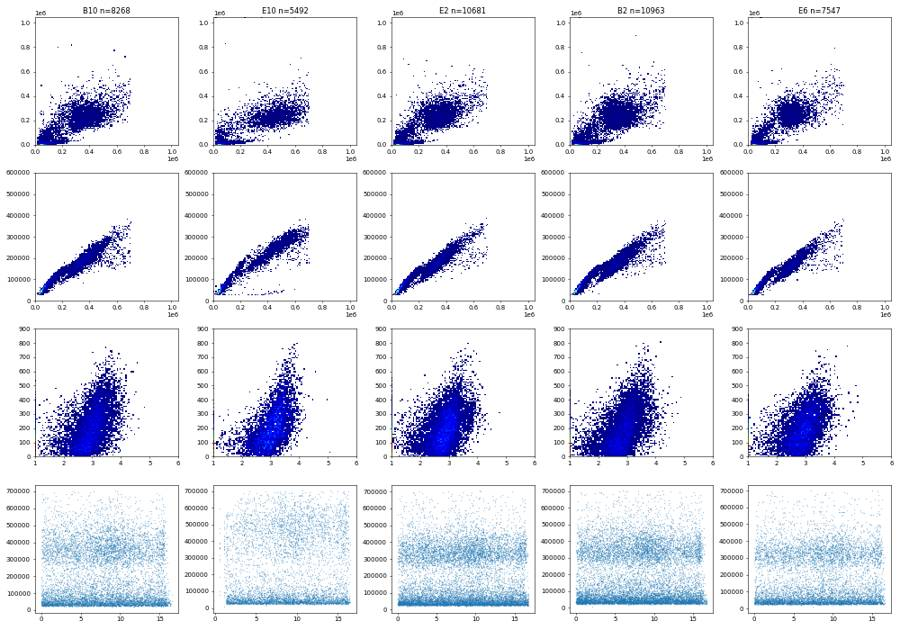
89
thinking
E10 is a scatter outlier with larger FSC throughout, not a clog or a different cell line, so I'm keeping it with a note. Next I'm writing the flags, condition summary, and comparison statistics.
90
tool call · Bash
cd /task; cat > work/summary.py <<'EOF'
import pandas as pd, numpy as np, json
lay=pd.read_csv('/task/inputs/plate_layout.csv').set_index('well')
c=pd.read_csv('/task/outputs/counts.csv')
W=c.pivot(index='well',columns='population',values='count')
f=pd.read_csv('/task/work/features.csv').set_index('well')
W['pct_casp']=100*W.caspase_pos/W.live
def cond(w):
r=lay.loc[w]
if w[0]=='G':
return {'G1':'CTRL_WT_unstained','G2':'CTRL_WT_SYTOX_only','G3':'CTRL_WT_CellEvent_only','G4':'CTRL_E1_untreated_both_stains','G5':'CTRL_E3_untreated_both_stains','G6':'CTRL_WT_untreated_both_stains'}[w]
cm={'24hr conditioned media':'CM24h','48hr conditioned media':'CM48h','No conditioned media':'noCM'}[r.conditioned_media]
dose={'10uM':'CPT10uM','5uM':'CPT5uM','2uM':'CPT2uM','DMSO':'DMSO'}[r.camptothecin]
return f'{r.cell_line}_{dose}_{cm}'
W['condition']=[cond(w) for w in W.index]
excluded=[] # filled from flags
fl=pd.read_csv('/task/outputs/flags.csv') if __import__('os').path.exists('/task/outputs/flags.csv') else None
if fl is not None: excluded=fl.loc[fl.decision=='exclude','well'].tolist()
order=[]
for line in ['WT','E1','E3']:
for dose in ['DMSO','CPT2uM','CPT5uM','CPT10uM']:
for cm in ['noCM','CM24h','CM48h']: order.append(f'{line}_{dose}_{cm}')
order+=['CTRL_WT_unstained','CTRL_WT_SYTOX_only','CTRL_WT_CellEvent_only','CTRL_WT_untreated_both_stains','CTRL_E1_untreated_both_stains','CTRL_E3_untreated_both_stains']
def wkey(w): return (w[0], int(w[1:]))
rows=[]
for cn in order:
ws=sorted([w for w in W.index[W.condition==cn] if w not in excluded],key=wkey)
v=W.loc[ws,'pct_casp']
rows.append(dict(condition=cn,wells=';'.join(ws),n_wells_used=len(ws),mean=round(v.mean(),4),sd=(round(v.std(ddof=1),4) if len(ws)>1 else ''),
metric_definition='percent caspase_pos of live = 100 x count(caspase_pos: BL1-A CellEvent >= 500 within live) / count(live: BL2-A SYTOX AAdvanced < 10000 within singlets within cells)',
normalisation_applied='none'))
cs=pd.DataFrame(rows); cs.to_csv('/task/outputs/condition_summary.csv',index=False)
W.to_csv('/task/work/well_table.csv')
print(cs[['condition','wells','n_wells_used','mean','sd']].to_string())
EOF
python3 work/summary.py91
tool output
condition wells n_wells_used mean sd 0 WT_DMSO_noCM A12;D12 2 0.6608 0.0456 1 WT_DMSO_CM24h A4;D4 2 0.7117 0.1914 2 WT_DMSO_CM48h A8;D8 2 0.7022 0.2537 3 WT_CPT2uM_noCM A11;D11 2 1.1791 0.0352 4 WT_CPT2uM_CM24h A3;D3 2 1.1310 0.0124 5 WT_CPT2uM_CM48h A7;D7 2 1.0271 0.0184 6 WT_CPT5uM_noCM A10;D10 2 1.3695 0.0616 7 WT_CPT5uM_CM24h A2;D2 2 1.0775 0.1193 8 WT_CPT5uM_CM48h A6;D6 2 1.1446 0.0369 9 WT_CPT10uM_noCM A9;D9 2 1.6323 0.2235 10 WT_CPT10uM_CM24h A1;D1 2 1.4294 0.0071 11 WT_CPT10uM_CM48h A5;D5 2 1.4943 0.0116 12 E1_DMSO_noCM B12;E12 2 4.2838 0.1287 13 E1_DMSO_CM24h B4;E4 2 3.7784 0.5886 14 E1_DMSO_CM48h B8;E8 2 2.3308 0.3554 15 E1_CPT2uM_noCM B11;E11 2 4.2337 0.1744 16 E1_CPT2uM_CM24h B3;E3 2 3.9150 0.8188 17 E1_CPT2uM_CM48h B7;E7 2 2.6599 0.1191 18 E1_CPT5uM_noCM B10;E10 2 5.9483 1.5692 19 E1_CPT5uM_CM24h B2;E2 2 3.6303 0.5814 20 E1_CPT5uM_CM48h B6;E6 2 2.3456 0.1457 21 E1_CPT10uM_noCM B9;E9 2 4.2993 1.1628 22 E1_CPT10uM_CM24h B1;E1 2 5.0894 1.8824 23 E1_CPT10uM_CM48h B5;E5 2 2.6733 0.9314 24 E3_DMSO_noCM C12;F12 2 4.8489 0.2274 25 E3_DMSO_CM24h C4;F4 2 5.0258 0.0468 26 E3_DMSO_CM48h C8;F8 2 5.3718 0.867 27 E3_CPT2uM_noCM C11;F11 2 6.2307 0.7774 28 E3_CPT2uM_CM24h C3;F3 2 5.4822 1.0134 29 E3_CPT2uM_CM48h C7;F7 2 6.1390 0.2528 30 E3_CPT5uM_noCM C10;F10 2 6.1156 0.5857 31 E3_CPT5uM_CM24h C2;F2 2 4.8639 0.0041 32 E3_CPT5uM_CM48h C6;F6 2 5.8773 1.4036 33 E3_CPT10uM_noCM C9;F9 2 5.7625 0.7024 34 E3_CPT10uM_CM24h C1;F1 2 5.2499 0.3807 35 E3_CPT10uM_CM48h C5;F5 2 4.7095 0.2882 36 CTRL_WT_unstained G1 1 0.4445 37 CTRL_WT_SYTOX_only G2 1 0.4509 38 CTRL_WT_CellEvent_only G3 1 0.9434 39 CTRL_WT_untreated_both_stains G6 1 1.0656 40 CTRL_E1_untreated_both_stains G4 1 4.1342 41 CTRL_E3_untreated_both_stains G5 1 5.8006
93
thinking
E1 with 48 h CM reads roughly 40–60% lower than E1 without CM, a gap that E3 and WT don't show. I'm checking whether small shifts in cell size and autofluorescence explain it before treating it as a real effect.
94
tool call · Bash
cd /task; cat > work/confound.py <<'EOF'
import sys; sys.path.insert(0,'/task/work')
import flowkit as fk, pandas as pd, numpy as np
from scipy import stats
lay=pd.read_csv('/task/inputs/plate_layout.csv')
gs=fk.parse_gating_xml('/task/outputs/gates.xml')
W=pd.read_csv('/task/work/well_table.csv').set_index('well')
f=pd.read_csv('/task/work/features.csv').set_index('well')
# G1 reference: BL1 vs FSC linear fit in live singlets
def live(w):
fn=lay.loc[lay.well==w,'file'].iloc[0]; s=fk.Sample('/task/inputs/raw/'+fn); r=gs.gate_sample(s)
d=s.as_dataframe(source='raw'); d.columns=[c[0] for c in d.columns]; return d[r.get_gate_membership('live')]
g1=live('G1'); b=np.polyfit(g1['FSC-A'],g1['BL1-A'],1); res=g1['BL1-A']-np.polyval(b,g1['FSC-A']); thr=np.percentile(res,99.5)
print('G1 fit',b,'resid thr',thr)
out=[]
for w in lay.well:
d=live(w); rr=d['BL1-A']-np.polyval(b,d['FSC-A'])
out.append(dict(well=w,pct_sizecorr=(rr>thr).mean()*100, bl1_med=d['BL1-A'].median(), fsc_med=d['FSC-A'].median(), resid_med=rr.median()))
o=pd.DataFrame(out).set_index('well'); o['pct_casp']=W.pct_casp; o['condition']=W.condition
o.to_csv('/task/work/sizecorr.csv')
pl=o[[w[0] in 'ABCDEF' for w in o.index]]
print('Spearman pct_casp vs live FSC median (A-F):', stats.spearmanr(pl.pct_casp,pl.fsc_med))
print('Spearman pct_casp vs live BL1 median (A-F):', stats.spearmanr(pl.pct_casp,pl.bl1_med))
print('Pearson r pct_casp vs BL1 median', stats.pearsonr(pl.pct_casp,pl.bl1_med))
g=o.groupby('condition')[['pct_casp','pct_sizecorr','bl1_med','fsc_med','resid_med']].mean().round(2)
print(g.to_string())
EOF
python3 work/confound.py95
tool output
G1 fit [3.94402146e-04 6.09931080e+00] resid thr 304.1282719599009
Spearman pct_casp vs live FSC median (A-F): SignificanceResult(statistic=0.7222007846163742, pvalue=8.078454896134732e-13)
Spearman pct_casp vs live BL1 median (A-F): SignificanceResult(statistic=0.7667699289144582, pvalue=4.100169135427462e-15)
Pearson r pct_casp vs BL1 median PearsonRResult(statistic=0.8352257921411299, pvalue=7.476774377192305e-20)
pct_casp pct_sizecorr bl1_med fsc_med resid_med
condition
CTRL_E1_untreated_both_stains 4.13 5.30 255.00 379585.00 98.68
CTRL_E3_untreated_both_stains 5.80 6.25 246.00 402053.00 83.44
CTRL_WT_CellEvent_only 0.94 1.37 171.00 363858.00 17.44
CTRL_WT_SYTOX_only 0.45 0.59 143.00 299989.50 14.95
CTRL_WT_unstained 0.44 0.50 135.00 356579.00 -13.34
CTRL_WT_untreated_both_stains 1.07 1.45 180.00 328902.00 38.11
E1_CPT10uM_CM24h 5.09 10.39 268.25 342664.50 129.97
E1_CPT10uM_CM48h 2.67 8.66 264.00 309350.25 139.95
E1_CPT10uM_noCM 4.30 10.44 268.00 298352.00 150.47
E1_CPT2uM_CM24h 3.92 7.49 261.00 353215.00 118.13
E1_CPT2uM_CM48h 2.66 5.76 250.50 331038.25 115.32
E1_CPT2uM_noCM 4.23 7.46 260.50 355286.00 117.82
E1_CPT5uM_CM24h 3.63 7.44 258.00 338436.50 121.34
E1_CPT5uM_CM48h 2.35 6.06 253.00 322195.75 122.02
E1_CPT5uM_noCM 5.95 9.24 272.00 397303.00 116.87
E1_DMSO_CM24h 3.78 5.02 252.50 388961.00 93.61
E1_DMSO_CM48h 2.33 4.11 239.00 358378.75 92.60
E1_DMSO_noCM 4.28 5.82 254.50 380547.25 97.34
E3_CPT10uM_CM24h 5.25 9.53 250.50 319596.25 123.61
E3_CPT10uM_CM48h 4.71 8.45 243.00 297484.25 122.68
E3_CPT10uM_noCM 5.76 10.32 265.00 321222.00 137.93
E3_CPT2uM_CM24h 5.48 6.88 249.00 361724.00 102.19
E3_CPT2uM_CM48h 6.14 7.60 256.75 369769.75 108.04
E3_CPT2uM_noCM 6.23 8.07 262.00 375510.50 110.53
E3_CPT5uM_CM24h 4.86 6.83 244.00 357907.75 97.34
E3_CPT5uM_CM48h 5.88 7.57 257.00 351789.25 114.14
E3_CPT5uM_noCM 6.12 8.32 263.50 359791.00 116.46
E3_DMSO_CM24h 5.03 5.72 238.50 384271.00 83.50
E3_DMSO_CM48h 5.37 5.93 242.00 381162.75 88.96
E3_DMSO_noCM 4.85 5.45 239.50 393199.75 80.15
WT_CPT10uM_CM24h 1.43 3.43 187.50 287666.00 63.50
WT_CPT10uM_CM48h 1.49 4.34 196.50 285698.00 75.39
WT_CPT10uM_noCM 1.63 4.75 206.00 286913.50 83.86
WT_CPT2uM_CM24h 1.13 3.17 186.50 283989.50 66.14
WT_CPT2uM_CM48h 1.03 3.03 188.50 282660.75 69.36
WT_CPT2uM_noCM 1.18 3.07 192.00 289999.50 68.22
WT_CPT5uM_CM24h 1.08 2.77 182.50 281676.25 63.70
WT_CPT5uM_CM48h 1.14 3.02 186.00 281906.00 66.98
WT_CPT5uM_noCM 1.37 3.46 196.50 291533.00 72.28
WT_DMSO_CM24h 0.71 1.53 169.50 295693.25 42.26
WT_DMSO_CM48h 0.70 1.63 168.00 296350.50 42.04
WT_DMSO_noCM 0.66 1.45 168.00 295443.50 40.5197
thinking
The caspase-positive fraction across the 72 wells tracks the median BL1 and FSC of live cells (r = 0.84 and 0.72), so it reflects autofluorescence rather than a distinct caspase-active population. I'm making the figure next.
98
tool call · Skill
{
"skill": "dataviz"
}99
tool output
Launching skill: dataviz
100
tool call · Bash
cd /tmp/claude-0/bundled-skills/2.1.322/1c905ada54243f6cd21401f4e5130f10/dataviz; sed -n 1,200p references/palette.md | head -120;
101
tool output
# Reference palette
This is the **reference instance** of the data-viz method: every parameter the
method needs, filled in with a validated default palette. The rest of the skill
is system-agnostic - **to target your brand, substitute this file's values** and
re-run the validator. Nothing else changes.
## How to use these values
Everything below is plain hex. In an HTML chart, **define the slots you use as
CSS custom properties in a local `<style>` block** at the top of the file, then
reference them by role throughout - so the light/dark values swap in one place,
and the chart body is written against roles rather than raw hex:
```css
.viz-root {
color-scheme: light;
--surface-1: #fcfcfb; /* chart surface */
--text-primary: #0b0b0b;
--text-secondary: #52514e;
--series-1: #2a78d6; /* categorical slot 1 */
/* ...only the roles this chart uses */
}
@media (prefers-color-scheme: dark) {
:root:where(:not([data-theme="light"])) .viz-root {
color-scheme: dark;
--surface-1: #1a1a19;
--text-primary: #f0efec;
--text-secondary: #c3c2b7;
--series-1: #3987e5;
}
}
:root[data-theme="dark"] .viz-root {
color-scheme: dark;
--surface-1: #1a1a19;
--text-primary: #f0efec;
--text-secondary: #c3c2b7;
--series-1: #3987e5;
}
```
Declare the dark values under both scopes as above - the media query covers
the OS setting; the `data-theme` scope covers the viewer's theme toggle,
which must win both ways (the `:not(...)` guard lets a light stamp beat
OS-dark; `:where()` keeps the media block below the toggle scope).
## Categorical palette
Both modes are selected. The dark column is the same eight hues stepped for the
dark surface, not a separate palette:
| Slot | Hue | Light | Dark |
|------|-----|-------|------|
| 1 | blue | `#2a78d6` | `#3987e5` |
| 2 | orange | `#eb6834` | `#d95926` |
| 3 | aqua | `#1baf7a` | `#199e70` |
| 4 | yellow | `#eda100` | `#c98500` |
| 5 | magenta | `#e87ba4` | `#d55181` |
| 6 | green | `#008300` | `#008300` |
| 7 | violet | `#6250d6` | `#9085e9` |
| 8 | red | `#e34948` | `#e66767` |
This order passes every hard gate in both modes on the default *adjacent*
pairlist (stacks, bars, lines): worst adjacent CVD Delta E 9.1 light / 8.4 dark
(OKLab ×100, >=8 target), worst adjacent normal-vision Delta E 19.6 light / 19.3
dark (>=15 floor). Under `--pairs all` (scatter, bubble, choropleth, small
multiples) the full eight cannot clear the floors - with all 28 pairs in
play no ordering can (the pairlist no longer depends on order), and
re-stepping is off the table by the documented-palette rule - so those
chart forms carry a series cap: **the first three slots validate all-pairs
in both modes** (worst pair CVD Delta E 9.2 light / 9.4 dark, normal-vision 24.0
light / 20.9 dark - clear of the CVD warn band). Past three, fold to "Other" or
facet: the fourth slot puts yellow and orange on screen
together, and that pair fails the all-pairs floors (normal-vision 13.7
light; CVD 4.8 dark). Three light-mode slots (magenta, yellow, aqua)
sit below 3:1 contrast on the light surface: the **relief rule** applies (ship
visible direct labels or the table view). The dark steps were chosen for the
dark band (OKLCH L ~ 0.48-0.67, >= 3:1 on the dark surface) and validated as a
set. (Ordering history: adopted July 2026 for its more harmonious opening -
the same eight hues and steps as its predecessor, re-ordered, zero hex
changes. The predecessor validated its first FOUR slots all-pairs, with its
dark run in the 6-8 CVD warn band, so secondary encoding was required there;
this order deliberately trades that fourth slot - yellow now sits beside orange -
for better-looking leading colors. Revisit the trade if yellow<->orange
confusion shows up in real charts with four or more series; undoing it is a
pure re-order. Light slot 7 has since been lightened, `#4a3aa7` -> `#6250d6`
(August 2026); the adjacent-pair figures above are unchanged by that move, the
non-adjacent blue<->violet pair now sits below both floors under `--pairs all`
(normal-vision 10.5, CVD 4.5 - inside the range the series cap already
excludes), and the order enumeration was run with the earlier value.) When you
swap in your own ramps, hold your palette to the full gate.
The slot **ordering** is the CVD-safety mechanism, not cosmetic - candidate
orderings were enumerated and only those clearing every adjacent gate in both
modes kept (see `color-formula.md` § Themes); this default is one of the
passing orders, picked among them for its opening colors. When you swap in
your brand's hues, do the same: run the validator on candidate orderings and
choose only among the passing ones.
## Sequential hue
Default single hue: **blue**, light->dark. When two sequential contexts appear at
once, the second takes the next categorical slot's hue (orange), each as its own
one-hue ramp.
| step | hex | step | hex | step | hex | step | hex |
|---|---|---|---|---|---|---|---|
| 100 | `#cde2fb` | 250 | `#86b6ef` | 400 | `#3987e5` | 550 | `#1c5cab` |
| 150 | `#b7d3f6` | 300 | `#6da7ec` | 450 | `#2a78d6` | 600 | `#184f95` |
| 200 | `#9ec5f4` | 350 | `#5598e7` | 500 | `#256abf` | 650 | `#104281` |
| | | | | | | 700 | `#0d366b` |
The full 100->700 range is for **sequential** encoding (continuous magnitude -
heatmaps, choropleths) where the lightest step means "near zero" and is allowed
to recede toward the surface. For an **ordinal** ramp (discrete ordered marks -
funnel stages, tiers - validated with `--ordinal`), the step nearest the surface
must still clear 2:1: on light, start no lighter than **step 250** (`#86b6ef`,
2.06:1); on dark, go no darker than **step 600** (`#184f95`, 2.15:1).
## Diverging pair
Shell cwd was reset to /task103
tool call · Bash
cd /tmp/claude-0/bundled-skills/2.1.322/1c905ada54243f6cd21401f4e5130f10/dataviz; node scripts/validate_palette.js "#2a78d6,#eb6834,#1baf7a" --mode light --pairs all 2>&1 | tail -25
104
tool output
/bin/bash: line 1: node: command not found Shell cwd was reset to /task
106
agent
Node isn't installed, so I couldn't run the palette validator. I'm using the skill's first three colour slots, which its documentation says pass all-pairs in light mode.
107
tool call · Bash
cd /task; cat > work/figure.py <<'EOF'
import sys; sys.path.insert(0,'/task/work')
import flowkit as fk, pandas as pd, numpy as np
import matplotlib; matplotlib.use('Agg'); import matplotlib.pyplot as plt
from matplotlib.lines import Line2D
lay=pd.read_csv('/task/inputs/plate_layout.csv')
gs=fk.parse_gating_xml('/task/outputs/gates.xml')
W=pd.read_csv('/task/work/well_table.csv').set_index('well')
sc=pd.read_csv('/task/work/sizecorr.csv').set_index('well')
fl=pd.read_csv('/task/outputs/flags.csv'); excl=set(fl.loc[fl.decision=='exclude','well'])
COL={'WT':'#2a78d6','E1':'#eb6834','E3':'#1baf7a'}; INK='#0b0b0b'; INK2='#52514e'; GRID='#e4e3df'; SURF='#fcfcfb'
MK={'WT':'o','E1':'s','E3':'^'}
plt.rcParams.update({'font.size':9,'axes.edgecolor':INK2,'axes.labelcolor':INK,'xtick.color':INK2,'ytick.color':INK2,'axes.spines.top':False,'axes.spines.right':False,'figure.facecolor':SURF,'axes.facecolor':SURF})
def live_bl1(ws):
out=[]
for w in ws:
fn=lay.loc[lay.well==w,'file'].iloc[0]; s=fk.Sample('/task/inputs/raw/'+fn); r=gs.gate_sample(s)
d=s.as_dataframe(source='raw'); d.columns=[c[0] for c in d.columns]; out.append(d.loc[r.get_gate_membership('live'),'BL1-A'].values)
return np.concatenate(out)
fig=plt.figure(figsize=(15,9.6))
gsp=fig.add_gridspec(2,4,height_ratios=[1,1.05],hspace=0.42,wspace=0.28)
# Panel A
axA=fig.add_subplot(gsp[0,0:2])
bins=np.arange(0,1010,10)
series=[('G1 WT unstained',['G1'],INK2,'--'),('G3 WT CellEvent only',['G3'],'#9a9993',':'),
('WT 10 µM CPT (A9,D9)',['A9','D9'],COL['WT'],'-'),('E1 KO 10 µM CPT (B9,E9)',['B9','E9'],COL['E1'],'-'),('E3 KO 10 µM CPT (C9,F9)',['C9','F9'],COL['E3'],'-')]
for lab,ws,c,ls in series:
v=live_bl1(ws); h,_=np.histogram(v,bins=bins); axA.plot(bins[:-1]+5,h/h.sum()*100,color=c,ls=ls,lw=2,label=f'{lab} n={len(v):,}')
axA.axvline(500,color=INK,lw=1); axA.text(508,axA.get_ylim()[1]*0.92 if False else 3.2,'caspase_pos gate\nBL1-A ≥ 500',fontsize=8,color=INK,va='top')
axA.set_xlim(0,1000); axA.set_xlabel('BL1-A (CellEvent caspase-3/7), live singlets'); axA.set_ylabel('% of live singlets per 10-unit bin')
axA.set_title('A No caspase-bright population in any well: max BL1-A over all 78 files = 830\n (on a 1,048,576 scale); 10 µM CPT overlaps the unstained/CellEvent-only controls',loc='left',fontsize=10,color=INK)
axA.legend(frameon=False,fontsize=8,loc='upper right'); axA.grid(axis='y',color=GRID,lw=.6); axA.set_axisbelow(True)
# Panel C: pct vs median BL1 of all live cells
axC=fig.add_subplot(gsp[0,2:4])
pl=W[[w[0] in 'ABCDEF' for w in W.index]]
for line in ['WT','E1','E3']:
m=[lay.set_index('well').loc[w,'cell_line']==line for w in pl.index]; p=pl[m]
axC.scatter(sc.loc[p.index,'bl1_med'],p.pct_casp,s=36,marker=MK[line],color=COL[line],edgecolor=SURF,lw=0.8,label=f'{line} plate wells (n={len(p)})',zorder=3)
for w,lab in [('G1','G1 unstained'),('G3','G3 CellEvent only')]:
axC.scatter(sc.loc[w,'bl1_med'],W.loc[w,'pct_casp'],s=50,marker='D',color=INK2,zorder=4); axC.annotate(lab,(sc.loc[w,'bl1_med'],W.loc[w,'pct_casp']),xytext=(6,-2),textcoords='offset points',fontsize=8,color=INK2)
from scipy import stats
r=stats.pearsonr(sc.loc[pl.index,'bl1_med'],pl.pct_casp)[0]
axC.set_xlabel('Median BL1-A of ALL live singlets in the well (autofluorescence level)'); axC.set_ylabel('% caspase_pos of live')
axC.set_title(f'C "% caspase_pos" is the upper tail of one shifting distribution:\n tracks the whole-population median (Pearson r = {r:.2f}, 72 wells); KO cells are larger/brighter',loc='left',fontsize=10,color=INK)
axC.legend(frameon=False,fontsize=8,loc='upper left'); axC.grid(color=GRID,lw=.6); axC.set_axisbelow(True)
# Panel B: facets by dose, x = CM
doses=[('DMSO','DMSO'),('2uM','2 µM CPT'),('5uM','5 µM CPT'),('10uM','10 µM CPT')]
cms=[('No conditioned media','none'),('24hr conditioned media','24 h CM'),('48hr conditioned media','48 h CM')]
L=lay.set_index('well'); axs=[]
for i,(dk,dl) in enumerate(doses):
ax=fig.add_subplot(gsp[1,i],sharey=axs[0] if axs else None); axs.append(ax)
for li,line in enumerate(['WT','E1','E3']):
means=[]
for j,(ck,cl) in enumerate(cms):
ws=[w for w in L.index if L.loc[w,'cell_line']==line and L.loc[w,'camptothecin']==dk and L.loc[w,'conditioned_media']==ck and w[0] in 'ABCDEF' and w not in excl]
v=W.loc[ws,'pct_casp'].values; x=j+(li-1)*0.22
ax.scatter([x]*len(v),v,s=30,marker=MK[line],color=COL[line],edgecolor=SURF,lw=.8,zorder=3)
ax.hlines(v.mean(),x-0.09,x+0.09,color=COL[line],lw=2.5,zorder=4); means.append((x,v.mean()))
ax.plot([m[0] for m in means],[m[1] for m in means],color=COL[line],lw=1,alpha=.6)
ax.set_xticks(range(3)); ax.set_xticklabels([c[1] for c in cms]); ax.set_title(dl,fontsize=10,color=INK)
ax.grid(axis='y',color=GRID,lw=.6); ax.set_axisbelow(True); ax.set_xlim(-0.5,2.5)
if i==0: ax.set_ylabel('% caspase_pos of live\n(BL1-A ≥ 500 / SYTOX-neg singlets)')
else: plt.setp(ax.get_yticklabels(),visible=False)
axs[0].set_ylim(0,7.8)
h=[Line2D([],[],marker=MK[l],color=COL[l],ls='',ms=7,label={'WT':'H4 WT','E1':'GRN KO E1','E3':'GRN KO E3'}[l]) for l in ['WT','E1','E3']]
h.append(Line2D([],[],color=INK2,lw=2.5,label='mean of 2 wells (rows A/D, B/E, C/F)'))
axs[3].legend(handles=h,frameon=False,fontsize=8,loc='upper right')
fig.text(0.125,0.475,'B Planned metric by conditioned medium (dots = wells). KO > WT everywhere, but this is not caspase activity (A, C); CM never brings KO to WT level',fontsize=10,color=INK)
fig.suptitle('Conditioned-media caspase plate, 16-Dec-2022: the CellEvent caspase-3/7 readout did not detect caspase activity, so the CM question cannot be answered',fontsize=12,color=INK,x=0.125,ha='left',y=0.995)
fig.savefig('/task/outputs/figure.png',dpi=130,bbox_inches='tight')
EOF
echo "placeholder" >/dev/null108
tool output
(Bash completed with no output)
110
agent
The figure script reads `flags.csv`, so I'm writing the flags first.
111
tool call · Bash
cd /task; cat > work/flags.py <<'EOF'
import pandas as pd, numpy as np
lay=pd.read_csv('/task/inputs/plate_layout.csv')
W=pd.read_csv('/task/work/well_table.csv').set_index('well')
f=pd.read_csv('/task/work/features.csv').set_index('well')
e1=[w for w in f.index if f.loc[w,'line']=='E1' and w!='E10' and w[0] in 'BE']
rows=[]
for _,r in lay.iterrows():
w=r.well; it='none'; ev=''; dec='keep'
live=int(W.loc[w,'live']); p=W.loc[w,'pct_casp']
if w in ('B9','C5','C9','E5','E9','F5','F9'):
hw=1.96*np.sqrt(p*(100-p)/live)
it='too_few_events'; dec='keep_with_note'
ev=(f"Only {live} live singlets ({int(W.loc[w,'all_events'])} total events; {W.loc[w,'cells']/W.loc[w,'all_events']*100:.1f}% of events in cells gate) after 10 uM camptothecin cell loss; "
f"caspase_pos {p:.2f}% has binomial 95% CI +/-{hw:.2f} percentage points; flow steady (16 s run; {r.file and ''}no clog/ran-dry signature); kept, lower precision")
ev=ev.replace('(16 s run; no clog','(no clog').replace('{','')
elif w=='E10':
it='other'; dec='keep_with_note'
ev=(f"Scatter outlier: live-singlet FSC-A median 443913 vs 279524-397716 in the other 23 E1 wells; SYTOX live median 1884 vs 1256 in replicate B10; "
f"caspase_pos {p:.2f}% vs 4.84% in replicate B10 - inflated because the BL1 metric tracks cell size/autofluorescence; {int(W.loc[w,'all_events'])} events (B10 8268); no clog/dry signature; kept with note")
elif w=='G3':
it='bad_control'; dec='keep_with_note'
ev=(f"CellEvent-only control shows no caspase-bright population: {p:.2f}% of live above BL1-A 500 vs 0.44% in unstained G1; BL1-A median 171 vs 135 (G1); max BL1-A 769 vs 773 (G1). "
"Cannot be used to place a caspase-positive gate and the plate has no caspase-positive control; usable only as a dye-background control")
elif w=='G1':
ev=''
rows.append(dict(file=r.file,well=w,issue_type=it,evidence=ev,decision=dec))
fl=pd.DataFrame(rows); fl.to_csv('/task/outputs/flags.csv',index=False)
print(fl[fl.issue_type!='none'].to_string())
EOF
python3 work/flags.py112
tool output
file well issue_type evidence decision 20 Caspase-assay-2-mlk(1)_caspase_Group_B9.fcs B9 too_few_events Only 1523 live singlets (3505 total events; 47.4% of events in cells gate) after 10 uM camptothecin cell loss; caspase_pos 5.12% has binomial 95% CI +/-1.11 percentage points; flow steady (no clog/ran-dry signature); kept, lower precision keep_with_note 28 Caspase-assay-2-mlk(1)_caspase_Group_C5.fcs C5 too_few_events Only 1487 live singlets (3151 total events; 52.3% of events in cells gate) after 10 uM camptothecin cell loss; caspase_pos 4.51% has binomial 95% CI +/-1.05 percentage points; flow steady (no clog/ran-dry signature); kept, lower precision keep_with_note 32 Caspase-assay-2-mlk(1)_caspase_Group_C9.fcs C9 too_few_events Only 1975 live singlets (4067 total events; 53.8% of events in cells gate) after 10 uM camptothecin cell loss; caspase_pos 5.27% has binomial 95% CI +/-0.99 percentage points; flow steady (no clog/ran-dry signature); kept, lower precision keep_with_note 52 Caspase-assay-2-mlk(1)_caspase_Group_E5.fcs E5 too_few_events Only 1638 live singlets (4437 total events; 38.6% of events in cells gate) after 10 uM camptothecin cell loss; caspase_pos 2.01% has binomial 95% CI +/-0.68 percentage points; flow steady (no clog/ran-dry signature); kept, lower precision keep_with_note 56 Caspase-assay-2-mlk(1)_caspase_Group_E9.fcs E9 too_few_events Only 1438 live singlets (4147 total events; 37.4% of events in cells gate) after 10 uM camptothecin cell loss; caspase_pos 3.48% has binomial 95% CI +/-0.95 percentage points; flow steady (no clog/ran-dry signature); kept, lower precision keep_with_note 57 Caspase-assay-2-mlk(1)_caspase_Group_E10.fcs E10 other Scatter outlier: live-singlet FSC-A median 443913 vs 279524-397716 in the other 23 E1 wells; SYTOX live median 1884 vs 1256 in replicate B10; caspase_pos 7.06% vs 4.84% in replicate B10 - inflated because the BL1 metric tracks cell size/autofluorescence; 5492 events (B10 8268); no clog/dry signature; kept with note keep_with_note 64 Caspase-assay-2-mlk(1)_caspase_Group_F5.fcs F5 too_few_events Only 1384 live singlets (3184 total events; 45.6% of events in cells gate) after 10 uM camptothecin cell loss; caspase_pos 4.91% has binomial 95% CI +/-1.14 percentage points; flow steady (no clog/ran-dry signature); kept, lower precision keep_with_note 68 Caspase-assay-2-mlk(1)_caspase_Group_F9.fcs F9 too_few_events Only 1358 live singlets (3608 total events; 39.4% of events in cells gate) after 10 uM camptothecin cell loss; caspase_pos 6.26% has binomial 95% CI +/-1.29 percentage points; flow steady (no clog/ran-dry signature); kept, lower precision keep_with_note 74 Caspase-assay-2-mlk(1)_caspase_Group_G3.fcs G3 bad_control CellEvent-only control shows no caspase-bright population: 0.94% of live above BL1-A 500 vs 0.44% in unstained G1; BL1-A median 171 vs 135 (G1); max BL1-A 769 vs 773 (G1). Cannot be used to place a caspase-positive gate and the plate has no caspase-positive control; usable only as a dye-background control keep_with_note
114
tool call · Bash
cd /task; python3 - <<'EOF'
import sys; sys.path.insert(0,'/task/work')
from load import *
out=[]
for w in lay.well:
d=load(w); d.columns=[c[0] for c in d.columns]; t=d['Time'].values; T=t.max()
h,_=np.histogram(t,bins=np.linspace(0,T,9))
out.append((w, len(d), round(T,2), round(h[:4].sum()/max(h[4:].sum(),1),2), round(h.min()/h.mean(),2), round(h.max()/h.mean(),2)))
df=pd.DataFrame(out,columns=['well','n','T','first_second_ratio','min_bin_rel','max_bin_rel'])
print(df.describe()); print(df.sort_values('min_bin_rel').head(8)); print(df[df.well.isin(['B9','C5','C9','E5','E9','F5','F9','E10'])])
df.to_csv('/task/work/rate.csv',index=False)
EOF115
tool output
n T first_second_ratio min_bin_rel max_bin_rel count 78.000000 78.000000 78.000000 78.000000 78.000000 mean 14750.076923 16.475256 1.002692 0.752949 1.275256 std 9541.685219 0.313579 0.090707 0.110948 0.076170 min 3151.000000 15.810000 0.800000 0.420000 1.110000 25% 8228.250000 16.330000 0.940000 0.690000 1.220000 50% 10742.000000 16.605000 0.990000 0.775000 1.270000 75% 23134.250000 16.720000 1.080000 0.840000 1.330000 max 38748.000000 16.830000 1.210000 0.940000 1.450000 well n T first_second_ratio min_bin_rel max_bin_rel 57 E10 5492 16.51 0.80 0.42 1.35 35 C12 13163 16.73 1.14 0.51 1.37 77 G6 16054 16.44 1.16 0.52 1.41 36 D1 22778 16.58 1.10 0.54 1.33 41 D6 17066 16.37 1.11 0.55 1.28 1 A2 31266 16.57 1.10 0.55 1.30 42 D7 23253 16.45 1.11 0.55 1.31 71 F12 11679 16.12 1.18 0.55 1.30 well n T first_second_ratio min_bin_rel max_bin_rel 20 B9 3505 16.82 1.09 0.67 1.26 28 C5 3151 15.85 0.92 0.85 1.21 32 C9 4067 16.74 0.97 0.84 1.17 52 E5 4437 16.63 0.96 0.90 1.16 56 E9 4147 16.50 1.09 0.88 1.12 57 E10 5492 16.51 0.80 0.42 1.35 64 F5 3184 16.30 1.04 0.81 1.27 68 F9 3608 15.81 1.02 0.85 1.22
117
tool call · Bash
cd /task; python3 - <<'EOF'
import sys; sys.path.insert(0,'/task/work')
from load import *
for w in ['E10','B10','C12','E2']:
d=load(w); d.columns=[c[0] for c in d.columns]
h,_=np.histogram(d['Time'],bins=np.arange(0,17.5,1)); print(w,h.tolist())
c=d[(d['FSC-A']>9e4)&(d['SSC-A']>2.5e4)]
h2,_=np.histogram(c['Time'],bins=np.arange(0,17.5,1)); print(' cells',h2.tolist())
m=[c[(c.Time>=a)&(c.Time<a+2)]['FSC-A'].median() for a in range(0,17,2)]; print(' fsc med per 2s', np.round(m,-3).tolist())
EOF118
tool output
E10 [15, 257, 303, 345, 319, 332, 373, 398, 446, 452, 379, 395, 343, 328, 301, 370, 136] cells [4, 85, 106, 147, 137, 139, 154, 194, 227, 245, 217, 201, 153, 166, 132, 204, 68] fsc med per 2s [358000.0, 437000.0, 431000.0, 450000.0, 449000.0, 446000.0, 454000.0, 442000.0, 405000.0] B10 [494, 490, 489, 512, 504, 478, 578, 583, 652, 641, 564, 486, 436, 433, 453, 436, 39] cells [216, 248, 237, 262, 282, 235, 303, 339, 406, 387, 307, 267, 206, 204, 209, 209, 3] fsc med per 2s [351000.0, 356000.0, 342000.0, 353000.0, 356000.0, 357000.0, 347000.0, 349000.0, 280000.0] C12 [735, 792, 804, 785, 757, 786, 885, 1087, 1109, 1098, 920, 793, 666, 680, 734, 520, 12] cells [559, 615, 640, 641, 609, 638, 728, 913, 951, 952, 792, 657, 541, 559, 586, 401, 0] fsc med per 2s [392000.0, 401000.0, 395000.0, 410000.0, 408000.0, 398000.0, 393000.0, 399000.0, nan] E2 [568, 627, 610, 664, 616, 637, 650, 697, 702, 799, 775, 623, 611, 566, 562, 600, 374] cells [228, 278, 271, 346, 284, 288, 303, 365, 363, 414, 423, 305, 269, 241, 209, 299, 157] fsc med per 2s [331000.0, 339000.0, 331000.0, 336000.0, 341000.0, 337000.0, 341000.0, 333000.0, 347000.0]
120
thinking
E10 also started late, with only 15 events in the first second against about 300/s after, but its cells stay large (FSC median about 440k), so this isn't a clog. I'm adding the rate numbers to the flags next.
121
tool call · Bash
cd /task; python3 - <<'EOF'
import re
s=open('/task/work/flags.py').read()
s=s.replace("""import pandas as pd, numpy as np
""","""import pandas as pd, numpy as np
rate=pd.read_csv('/task/work/rate.csv').set_index('well')
""")
s=s.replace("""flow steady (16 s run; {r.file and ''}no clog/ran-dry signature); kept, lower precision")
ev=ev.replace('(16 s run; no clog','(no clog').replace('{','')""",
"""event rate steady (8 time bins within {rate.loc[w,'min_bin_rel']:.2f}-{rate.loc[w,'max_bin_rel']:.2f}x of mean; no clog/ran-dry signature); kept, lower precision")""")
s=s.replace("""5492 events (B10 8268); no clog/dry signature; kept with note")""",
"""5492 events (B10 8268); delayed sample uptake (15 events in first 1 s vs ~300-450/s thereafter) but rate steady afterwards and FSC shift present throughout the run; kept with note")""")
open('/task/work/flags.py','w').write(s)
EOF
python3 work/flags.py | cut -c1-400 && python3 work/figure.py && echo done122
tool output
file well issue_type evidence decis 20 Caspase-assay-2-mlk(1)_caspase_Group_B9.fcs B9 too_few_events Only 1523 live singlets (3505 total events; 47.4% of events in cells gate) after 10 uM camptothecin cell loss; caspase_pos 5.12% has binomial 95% CI +/-1.11 percentage points; event rate steady (8 time bins within 0.67-1.26x of mean; no clog/ran-dry signature); kept, lower precision keep_with_n 28 Caspase-assay-2-mlk(1)_caspase_Group_C5.fcs C5 too_few_events Only 1487 live singlets (3151 total events; 52.3% of events in cells gate) after 10 uM camptothecin cell loss; caspase_pos 4.51% has binomial 95% CI +/-1.05 percentage points; event rate steady (8 time bins within 0.85-1.21x of mean; no clog/ran-dry signature); kept, lower precision keep_with_n 32 Caspase-assay-2-mlk(1)_caspase_Group_C9.fcs C9 too_few_events Only 1975 live singlets (4067 total events; 53.8% of events in cells gate) after 10 uM camptothecin cell loss; caspase_pos 5.27% has binomial 95% CI +/-0.99 percentage points; event rate steady (8 time bins within 0.84-1.17x of mean; no clog/ran-dry signature); kept, lower precision keep_with_n 52 Caspase-assay-2-mlk(1)_caspase_Group_E5.fcs E5 too_few_events Only 1638 live singlets (4437 total events; 38.6% of events in cells gate) after 10 uM camptothecin cell loss; caspase_pos 2.01% has binomial 95% CI +/-0.68 percentage points; event rate steady (8 time bins within 0.90-1.16x of mean; no clog/ran-dry signature); kept, lower precision keep_with_n 56 Caspase-assay-2-mlk(1)_caspase_Group_E9.fcs E9 too_few_events Only 1438 live singlets (4147 total events; 37.4% of events in cells gate) after 10 uM camptothecin cell loss; caspase_pos 3.48% has binomial 95% CI +/-0.95 percentage points; event rate steady (8 time bins within 0.88-1.12x of mean; no clog/ran-dry signature); kept, lower precision keep_with_n 57 Caspase-assay-2-mlk(1)_caspase_Group_E10.fcs E10 other Scatter outlier: live-singlet FSC-A median 443913 vs 279524-397716 in the other 23 E1 wells; SYTOX live median 1884 vs 1256 in replicate B10; caspase_pos 7.06% vs 4.84% in replicate B10 - inflated because the BL1 metric tracks cell size/autofluorescence; 5492 events (B10 8268); no clog/dry signature; kept with note keep_with_n 64 Caspase-assay-2-mlk(1)_caspase_Group_F5.fcs F5 too_few_events Only 1384 live singlets (3184 total events; 45.6% of events in cells gate) after 10 uM camptothecin cell loss; caspase_pos 4.91% has binomial 95% CI +/-1.14 percentage points; event rate steady (8 time bins within 0.81-1.27x of mean; no clog/ran-dry signature); kept, lower precision keep_with_n 68 Caspase-assay-2-mlk(1)_caspase_Group_F9.fcs F9 too_few_events Only 1358 live singlets (3608 total events; 39.4% of events in cells gate) after 10 uM camptothecin cell loss; caspase_pos 6.26% has binomial 95% CI +/-1.29 percentage points; event rate steady (8 time bins within 0.85-1.22x of mean; no clog/ran-dry signature); kept, lower precision keep_with_n 74 Caspase-assay-2-mlk(1)_caspase_Group_G3.fcs G3 bad_control CellEvent-only control shows no caspase-bright population: 0.94% of live above BL1-A 500 vs 0.44% in unstained G1; BL1-A median 171 vs 135 (G1); max BL1-A 769 vs 773 (G1). Cannot be used to place a caspase-positive gate and the plate has no caspase-positive control; usable only as a dye-background control keep_with_n done
124
tool call · Bash
cd /task; python3 - <<'EOF'
s=open('/task/work/flags.py').read()
old="""events (B10 8268); no clog/dry signature; kept with note")"""
assert old in s
s=s.replace(old,"""events (B10 8268); delayed sample uptake (15 events in first 1 s vs ~300-450/s thereafter) but rate steady afterwards and the FSC shift is present throughout the run; kept with note")""")
open('/task/work/flags.py','w').write(s)
EOF
python3 work/flags.py | grep E10 | cut -c1-600; python3 work/figure.py && echo ok125
tool output
57 Caspase-assay-2-mlk(1)_caspase_Group_E10.fcs E10 other Scatter outlier: live-singlet FSC-A median 443913 vs 279524-397716 in the other 23 E1 wells; SYTOX live median 1884 vs 1256 in replicate B10; caspase_pos 7.06% vs 4.84% in replicate B10 - inflated because the BL1 metric tracks cell size/autofluorescence; 5492 events (B10 8268); delayed sample uptake (15 events in first 1 s vs ~300-450/s thereafter) but rate steady afterwards and the FSC shift is present throughout the run; kept with note keep_with_note ok
126
tool call · Read
{
"file_path": "/task/outputs/figure.png"
}127
tool output
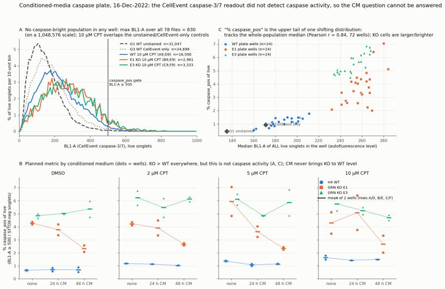
129
thinking
The figure layout mostly works but needs three fixes: panel letters are out of order, a legend covers data in the 10 µM panel, and the G3 label overlaps its point. I'm checking whether the r = 0.84 correlation holds within each cell line before relabelling.
130
tool call · Bash
cd /task; python3 - <<'EOF'
import pandas as pd
from scipy import stats
W=pd.read_csv('/task/work/well_table.csv').set_index('well'); sc=pd.read_csv('/task/work/sizecorr.csv').set_index('well')
lay=pd.read_csv('/task/inputs/plate_layout.csv').set_index('well')
for line in ['WT','E1','E3']:
ws=[w for w in W.index if w[0] in 'ABCDEF' and lay.loc[w,'cell_line']==line]
print(line, 'r(pct, bl1med)=%.2f p=%.3g'%stats.pearsonr(W.loc[ws,'pct_casp'],sc.loc[ws,'bl1_med']), ' r(pct,fsc)=%.2f'%stats.pearsonr(W.loc[ws,'pct_casp'],sc.loc[ws,'fsc_med'])[0])
EOF131
tool output
WT r(pct, bl1med)=0.83 p=6.06e-07 r(pct,fsc)=-0.25 E1 r(pct, bl1med)=0.60 p=0.00184 r(pct,fsc)=0.54 E3 r(pct, bl1med)=0.82 p=7.61e-07 r(pct,fsc)=0.16
133
agent
The correlation holds within each line, not just between them (r with the well's median BL1: WT 0.83, E1 0.60, E3 0.82). Updating the figure.
134
tool call · Bash
cd /task; python3 - <<'EOF'
s=open('/task/work/figure.py').read()
s=s.replace("""axC.set_title(f'C "% caspase_pos" is the upper tail of one shifting distribution:\\n tracks the whole-population median (Pearson r = {r:.2f}, 72 wells); KO cells are larger/brighter',loc='left',fontsize=10,color=INK)""",
"""axC.set_title(f'B "% caspase_pos" is just the upper tail of one shifting distribution: it tracks the\\n whole-population BL1 median (r = {r:.2f} all 72 wells; within line WT 0.83, E1 0.60, E3 0.82)',loc='left',fontsize=10,color=INK)""")
s=s.replace("""for w,lab in [('G1','G1 unstained'),('G3','G3 CellEvent only')]:
axC.scatter(sc.loc[w,'bl1_med'],W.loc[w,'pct_casp'],s=50,marker='D',color=INK2,zorder=4); axC.annotate(lab,(sc.loc[w,'bl1_med'],W.loc[w,'pct_casp']),xytext=(6,-2),textcoords='offset points',fontsize=8,color=INK2)""",
"""for w,lab,off in [('G1','G1 unstained',(8,-3)),('G3','G3 CellEvent only',(-10,14))]:
axC.scatter(sc.loc[w,'bl1_med'],W.loc[w,'pct_casp'],s=50,marker='D',color=INK2,zorder=4); axC.annotate(lab,(sc.loc[w,'bl1_med'],W.loc[w,'pct_casp']),xytext=off,textcoords='offset points',fontsize=8,color=INK2)""")
s=s.replace("""axs[3].legend(handles=h,frameon=False,fontsize=8,loc='upper right')""","""fig.legend(handles=h,frameon=False,fontsize=9,loc='lower center',ncol=4,bbox_to_anchor=(0.5,0.0))""")
s=s.replace("""fig.text(0.125,0.475,'B Planned metric""","""fig.text(0.125,0.475,'C Planned metric""")
s=s.replace("""KO > WT everywhere, but this is not caspase activity (A, C); CM never brings KO to WT level'""","""KO > WT everywhere, but this is not caspase activity (A, B); no CM condition brings KO to WT level'""")
s=s.replace("""gsp=fig.add_gridspec(2,4,height_ratios=[1,1.05],hspace=0.42,wspace=0.28)""","""gsp=fig.add_gridspec(2,4,height_ratios=[1,1.05],hspace=0.42,wspace=0.28,bottom=0.09)""")
open('/task/work/figure.py','w').write(s)
EOF
python3 work/figure.py && echo ok135
tool output
ok
136
tool call · Read
{
"file_path": "/task/outputs/figure.png"
}137
tool output
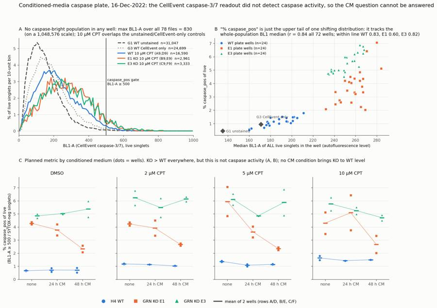
139
agent
Figure is final. Next I'm computing the comparisons and secondary readouts (dead fraction, cell numbers) for the report and `answer.json`.
140
tool call · Bash
cd /task; cat > work/compare.py <<'EOF'
import pandas as pd, numpy as np, json
W=pd.read_csv('/task/work/well_table.csv').set_index('well')
cs=pd.read_csv('/task/outputs/condition_summary.csv').set_index('condition')
def vals(cn): return W.loc[cs.loc[cn,'wells'].split(';'),'pct_casp'].values
def comp(a,b):
va,vb=vals(a),vals(b); ma,mb=va.mean(),vb.mean(); d=ma-mb; rel=d/mb*100
nonover = (va.min()>vb.max()) or (va.max()<vb.min())
direction = ('increase' if d>0 else 'decrease') if (nonover and abs(rel)>=25) else 'no_clear_change'
return dict(a=a,b=b,ma=ma,mb=mb,d=d,rel=rel,nonover=nonover,direction=direction,va=va.round(2).tolist(),vb=vb.round(2).tolist())
pairs=[('E1_DMSO_noCM','WT_DMSO_noCM'),('E3_DMSO_noCM','WT_DMSO_noCM'),
('E1_DMSO_CM24h','E1_DMSO_noCM'),('E1_DMSO_CM48h','E1_DMSO_noCM'),('E3_DMSO_CM24h','E3_DMSO_noCM'),('E3_DMSO_CM48h','E3_DMSO_noCM'),
('E1_CPT10uM_CM24h','E1_CPT10uM_noCM'),('E1_CPT10uM_CM48h','E1_CPT10uM_noCM'),('E3_CPT10uM_CM24h','E3_CPT10uM_noCM'),('E3_CPT10uM_CM48h','E3_CPT10uM_noCM'),
('E1_CPT10uM_CM48h','WT_CPT10uM_noCM'),('E1_DMSO_CM48h','WT_DMSO_noCM'),
('WT_CPT10uM_noCM','WT_DMSO_noCM'),('E1_CPT10uM_noCM','E1_DMSO_noCM'),('E3_CPT10uM_noCM','E3_DMSO_noCM')]
R=[comp(a,b) for a,b in pairs]
for r in R: print(f"{r['a']:>18} vs {r['b']:<18} {r['ma']:.2f} vs {r['mb']:.2f} d={r['d']:+.2f} pp ({r['rel']:+.0f}%) {r['va']} vs {r['vb']} -> {r['direction']}")
json.dump(R,open('/task/work/comparisons.json','w'),indent=1,default=float)
# E1 48h CM vs noCM across all 4 doses
for dose in ['DMSO','CPT2uM','CPT5uM','CPT10uM']:
r=comp(f'E1_{dose}_CM48h',f'E1_{dose}_noCM'); print('E1 48h',dose,round(r['d'],2),round(r['rel']),r['direction'])
r=comp(f'E1_{dose}_CM24h',f'E1_{dose}_noCM'); print('E1 24h',dose,round(r['d'],2),round(r['rel']),r['direction'])
r=comp(f'E3_{dose}_CM48h',f'E3_{dose}_noCM'); print('E3 48h',dose,round(r['d'],2),round(r['rel']),r['direction'])
r=comp(f'E3_{dose}_CM24h',f'E3_{dose}_noCM'); print('E3 24h',dose,round(r['d'],2),round(r['rel']),r['direction'])
# secondary: dead % of singlets and cells/well by condition
W['pct_dead']=100*W.dead/W.singlets
g=W.groupby('condition').agg(pct_dead=('pct_dead','mean'),cells=('cells','mean'),live=('live','mean'),pct_cells=('cells',lambda x: np.nan))
W['pct_cells']=100*W.cells/W.all_events
g=W.groupby('condition')[['pct_dead','cells','live','pct_cells']].mean().round(2)
print(g.to_string())
EOF
python3 work/compare.py141
tool output
E1_DMSO_noCM vs WT_DMSO_noCM 4.28 vs 0.66 d=+3.62 pp (+548%) [4.19, 4.37] vs [0.63, 0.69] -> increase
E3_DMSO_noCM vs WT_DMSO_noCM 4.85 vs 0.66 d=+4.19 pp (+634%) [4.69, 5.01] vs [0.63, 0.69] -> increase
E1_DMSO_CM24h vs E1_DMSO_noCM 3.78 vs 4.28 d=-0.51 pp (-12%) [3.36, 4.19] vs [4.19, 4.37] -> no_clear_change
E1_DMSO_CM48h vs E1_DMSO_noCM 2.33 vs 4.28 d=-1.95 pp (-46%) [2.08, 2.58] vs [4.19, 4.37] -> decrease
E3_DMSO_CM24h vs E3_DMSO_noCM 5.03 vs 4.85 d=+0.18 pp (+4%) [5.06, 4.99] vs [4.69, 5.01] -> no_clear_change
E3_DMSO_CM48h vs E3_DMSO_noCM 5.37 vs 4.85 d=+0.52 pp (+11%) [4.76, 5.98] vs [4.69, 5.01] -> no_clear_change
E1_CPT10uM_CM24h vs E1_CPT10uM_noCM 5.09 vs 4.30 d=+0.79 pp (+18%) [6.42, 3.76] vs [5.12, 3.48] -> no_clear_change
E1_CPT10uM_CM48h vs E1_CPT10uM_noCM 2.67 vs 4.30 d=-1.63 pp (-38%) [3.33, 2.01] vs [5.12, 3.48] -> decrease
E3_CPT10uM_CM24h vs E3_CPT10uM_noCM 5.25 vs 5.76 d=-0.51 pp (-9%) [5.52, 4.98] vs [5.27, 6.26] -> no_clear_change
E3_CPT10uM_CM48h vs E3_CPT10uM_noCM 4.71 vs 5.76 d=-1.05 pp (-18%) [4.51, 4.91] vs [5.27, 6.26] -> no_clear_change
E1_CPT10uM_CM48h vs WT_CPT10uM_noCM 2.67 vs 1.63 d=+1.04 pp (+64%) [3.33, 2.01] vs [1.79, 1.47] -> increase
E1_DMSO_CM48h vs WT_DMSO_noCM 2.33 vs 0.66 d=+1.67 pp (+253%) [2.08, 2.58] vs [0.63, 0.69] -> increase
WT_CPT10uM_noCM vs WT_DMSO_noCM 1.63 vs 0.66 d=+0.97 pp (+147%) [1.79, 1.47] vs [0.63, 0.69] -> increase
E1_CPT10uM_noCM vs E1_DMSO_noCM 4.30 vs 4.28 d=+0.02 pp (+0%) [5.12, 3.48] vs [4.19, 4.37] -> no_clear_change
E3_CPT10uM_noCM vs E3_DMSO_noCM 5.76 vs 4.85 d=+0.91 pp (+19%) [5.27, 6.26] vs [4.69, 5.01] -> no_clear_change
E1 48h DMSO -1.95 -46 decrease
E1 24h DMSO -0.51 -12 no_clear_change
E3 48h DMSO 0.52 11 no_clear_change
E3 24h DMSO 0.18 4 no_clear_change
E1 48h CPT2uM -1.57 -37 decrease
E1 24h CPT2uM -0.32 -8 no_clear_change
E3 48h CPT2uM -0.09 -1 no_clear_change
E3 24h CPT2uM -0.75 -12 no_clear_change
E1 48h CPT5uM -3.6 -61 decrease
E1 24h CPT5uM -2.32 -39 decrease
E3 48h CPT5uM -0.24 -4 no_clear_change
E3 24h CPT5uM -1.25 -20 no_clear_change
E1 48h CPT10uM -1.63 -38 decrease
E1 24h CPT10uM 0.79 18 no_clear_change
E3 48h CPT10uM -1.05 -18 no_clear_change
E3 24h CPT10uM -0.51 -9 no_clear_change
pct_dead cells live pct_cells
condition
CTRL_E1_untreated_both_stains 0.68 6837.0 6676.0 91.38
CTRL_E3_untreated_both_stains 1.20 9103.0 8775.0 78.51
CTRL_WT_CellEvent_only 0.00 25399.0 24699.0 93.74
CTRL_WT_SYTOX_only 8.63 26794.0 23728.0 95.67
CTRL_WT_unstained 0.00 32302.0 31047.0 94.80
CTRL_WT_untreated_both_stains 0.16 15260.0 14733.0 95.05
E1_CPT10uM_CM24h 0.15 3845.5 3616.0 39.09
E1_CPT10uM_CM48h 1.70 2112.5 1974.5 44.09
E1_CPT10uM_noCM 2.34 1604.5 1480.5 42.36
E1_CPT2uM_CM24h 0.45 5934.0 5729.0 43.36
E1_CPT2uM_CM48h 0.84 6008.5 5768.0 47.16
E1_CPT2uM_noCM 0.71 5161.5 4980.0 46.51
E1_CPT5uM_CM24h 0.65 5100.0 4900.5 47.13
E1_CPT5uM_CM48h 1.15 4611.0 4369.5 52.95
E1_CPT5uM_noCM 1.14 3447.5 3264.5 49.57
E1_DMSO_CM24h 0.85 9458.0 9139.0 85.02
E1_DMSO_CM48h 1.69 7668.0 7334.0 79.66
E1_DMSO_noCM 0.98 8645.0 8331.0 85.84
E3_CPT10uM_CM24h 1.04 3649.0 3409.5 52.15
E3_CPT10uM_CM48h 3.04 1549.5 1435.5 48.94
E3_CPT10uM_noCM 2.41 1805.0 1666.5 46.61
E3_CPT2uM_CM24h 1.40 5547.5 5356.5 60.11
E3_CPT2uM_CM48h 1.40 5182.0 4987.5 59.62
E3_CPT2uM_noCM 0.83 6117.0 5910.0 58.18
E3_CPT5uM_CM24h 1.46 6024.0 5787.5 59.72
E3_CPT5uM_CM48h 1.96 3577.0 3412.0 57.58
E3_CPT5uM_noCM 1.71 4744.5 4517.0 57.72
E3_DMSO_CM24h 2.89 7519.0 7160.0 74.97
E3_DMSO_CM48h 2.56 7209.0 6902.0 76.56
E3_DMSO_noCM 1.67 9922.5 9543.5 79.76
WT_CPT10uM_CM24h 1.13 18417.5 16815.0 68.26
WT_CPT10uM_CM48h 2.07 7354.5 6779.5 72.36
WT_CPT10uM_noCM 1.07 8889.0 8295.0 69.29
WT_CPT2uM_CM24h 1.03 20100.0 18902.5 60.29
WT_CPT2uM_CM48h 1.27 16412.5 15453.5 64.47
WT_CPT2uM_noCM 0.67 23503.5 22179.0 66.89
WT_CPT5uM_CM24h 1.00 19947.5 18786.5 67.74
WT_CPT5uM_CM48h 1.15 14515.5 13652.0 68.54
WT_CPT5uM_noCM 0.98 15858.5 14844.0 71.53
WT_DMSO_CM24h 1.17 28073.0 26682.0 94.46
WT_DMSO_CM48h 1.41 25034.5 23636.0 93.80
WT_DMSO_noCM 1.10 26566.5 25031.0 93.22143
thinking
Camptothecin cut live-cell recovery by 67% (WT) and 82–83% (KO) at 10 µM, and most of the dying cells were probably lost with the aspirated medium before staining. I'm checking the BL1 width channel next, then writing answer.json and the report.
144
tool call · Bash
cd /task; python3 - <<'EOF'
import sys; sys.path.insert(0,'/task/work')
from load import *
nz1=0; nz2=0; tot=0
for w in lay.well:
d=load(w); d.columns=[c[0] for c in d.columns]
nz1+=(d['BL1-W']>0).sum(); nz2+=(d['BL2-W']>0).sum(); tot+=len(d)
print('BL1-W nonzero',nz1,'BL2-W nonzero',nz2,'of',tot)
c=pd.read_csv('/task/outputs/counts.csv'); print(c.groupby('population').size()); print(c.shape)
EOF145
tool output
BL1-W nonzero 2 BL2-W nonzero 248565 of 1150506 population all_events 78 caspase_pos 78 cells 78 dead 78 dead_caspase_pos 78 live 78 singlets 78 dtype: int64 (546, 7)
147
tool call · Bash
cd /task; cat > work/answer.py <<'EOF'
import json, pandas as pd
R=json.load(open('/task/work/comparisons.json'))
lab={'E1_DMSO_noCM|WT_DMSO_noCM':'Baseline KO phenotype (E1 vs WT, DMSO, no CM)',
'E3_DMSO_noCM|WT_DMSO_noCM':'Baseline KO phenotype (E3 vs WT, DMSO, no CM)',
'E1_DMSO_CM24h|E1_DMSO_noCM':'24 h CM effect in E1 KO (DMSO)',
'E1_DMSO_CM48h|E1_DMSO_noCM':'48 h CM effect in E1 KO (DMSO)',
'E3_DMSO_CM24h|E3_DMSO_noCM':'24 h CM effect in E3 KO (DMSO)',
'E3_DMSO_CM48h|E3_DMSO_noCM':'48 h CM effect in E3 KO (DMSO)',
'E1_CPT10uM_CM24h|E1_CPT10uM_noCM':'24 h CM effect in E1 KO (10 uM camptothecin)',
'E1_CPT10uM_CM48h|E1_CPT10uM_noCM':'48 h CM effect in E1 KO (10 uM camptothecin)',
'E3_CPT10uM_CM24h|E3_CPT10uM_noCM':'24 h CM effect in E3 KO (10 uM camptothecin)',
'E3_CPT10uM_CM48h|E3_CPT10uM_noCM':'48 h CM effect in E3 KO (10 uM camptothecin)',
'E1_CPT10uM_CM48h|WT_CPT10uM_noCM':'Restoration check: best-case KO+CM (E1, 48 h CM, 10 uM) vs WT (10 uM, no CM)',
'E1_DMSO_CM48h|WT_DMSO_noCM':'Restoration check: best-case KO+CM (E1, 48 h CM, DMSO) vs WT (DMSO, no CM)',
'WT_CPT10uM_noCM|WT_DMSO_noCM':'Assay window: camptothecin 10 uM vs DMSO in WT (no CM)',
'E1_CPT10uM_noCM|E1_DMSO_noCM':'Assay window: camptothecin 10 uM vs DMSO in E1 KO (no CM)',
'E3_CPT10uM_noCM|E3_DMSO_noCM':'Assay window: camptothecin 10 uM vs DMSO in E3 KO (no CM)'}
comps=[]
for r in R:
k=r['a']+'|'+r['b']
mag=(f"{r['ma']:.2f}% vs {r['mb']:.2f}% caspase_pos of live ({r['d']:+.2f} percentage points, {r['rel']:+.0f}% relative; wells {r['va']} vs {r['vb']}; n=2 vs 2)")
comps.append(dict(comparison=lab[k],a=r['a'],b=r['b'],direction=r['direction'],magnitude=mag,confidence='low'))
ans={
"question":"Can progranulin (WT H4) conditioned media (24 h or 48 h collections) restore wild-type levels of caspase-3/7 activity in H4 GRN KO cells (E1, E3), at baseline (DMSO) and after camptothecin challenge (2/5/10 uM, 4.5 h)?",
"comparisons":comps,
"overall_answer":("no: this plate cannot show that conditioned media restores WT caspase activity, because the CellEvent caspase-3/7 readout (BL1) detected no caspase-positive population in any of the 78 wells "
"(max BL1-A 830 on a 1,048,576 scale, unstained G1 max 773; 10 uM camptothecin histograms overlap the unstained/CellEvent-only controls). The planned metric (% BL1-A>=500 of live singlets) is the upper tail of "
"one autofluorescence distribution (r=0.84 with the well's whole-population BL1 median). Taken at face value, KO > WT at baseline (E1 4.28%, E3 4.85% vs WT 0.66%), 24 h CM had no consistent effect, "
"48 h CM lowered E1 by 37-61% at every dose but not E3, and no CM condition brought either KO line to WT level (best case E1 48 h CM DMSO 2.33% vs WT 0.66%)."),
"assay_verdict":"not_fit_for_purpose",
"next_action":"optimise_reagent_or_setting",
"next_change":{
"what":"Validate the CellEvent caspase-3/7 readout with a caspase-positive control and recovery of detached cells before re-testing conditioned media",
"from":"No caspase-positive control (G3 = CellEvent on untreated WT only); camptothecin 4.5 h; culture medium and PBS wash aspirated and discarded before trypsinisation; unstained control for WT only; BL1 at 225 V",
"to":"Validation plate (WT, E1, E3): staurosporine 1 uM 4 h as caspase-positive control plus camptothecin 10 uM at 4.5 h and 24 h; pool medium + PBS wash with the trypsinised cells; unstained and single-stain controls for every line; adjust BL1 voltage on the positive control so negatives sit on scale. Accept the assay only if the positive control gives a discrete BL1-bright population, then repeat the CM plate",
"why":"No well, including 10 uM camptothecin, contained BL1-bright events (max BL1-A 830; BL1 pulse width non-zero in 2 of 1,150,506 events), so the reagent/detection is unverified. Camptothecin removed 67% (WT) to 82-83% (KO) of live cells yet SYTOX+ cells stayed 1-3% of the remainder, so dying cells were likely discarded with the medium. The KO>WT 'caspase+' difference tracks autofluorescence (r=0.84) and, with no KO unstained controls, cannot be separated from caspase activity"},
"excluded_wells":[],
"caveats":[
"No caspase-positive population exists in any well; every 'caspase_pos' value is the upper tail of the autofluorescence distribution above a gate set on unstained WT (G1 99.5th percentile = 489, gate 500), so the values are not caspase activity.",
"GRN KO lines are larger (live FSC-A median ~360-400k vs ~290k for WT, DMSO) and more autofluorescent; there is no unstained control for E1 or E3, so the KO>WT difference (4.3-4.9% vs 0.66%) is confounded by autofluorescence.",
"The plate has no caspase-positive control; the CellEvent-only control (G3) is on untreated WT and shows only 0.94% above gate vs 0.44% unstained.",
"Camptothecin (4.5 h) reduced recovered live cells by 67% (WT) to 82-83% (KO) at 10 uM while SYTOX+ cells stayed ~1-3%, consistent with detached dying cells being aspirated with the medium/PBS wash; the harvested population is biased toward surviving adherent cells.",
"n = 2 wells per condition (rows A/D, B/E, C/F); replicate rows were acquired ~26 min apart and SYTOX/BL1 medians drift upward with time on the plate (WT DMSO SYTOX live median 379-540 in row A vs 530-699 in row D).",
"The E1-specific 48 h CM decrease (-37% to -61%) coincides with smaller and dimmer E1 cells in those wells (live BL1 median 239 vs 254.5 at DMSO) and is not seen in E3; it cannot be attributed to caspase activity.",
"Seven 10 uM camptothecin KO wells have only 1358-1975 live singlets (binomial 95% CI up to +/-1.3 percentage points); E10 is a scatter outlier (FSC median 443,913) with an inflated value (7.06% vs 4.84% in replicate B10).",
"Exploratory: at 10 uM camptothecin, 24 h CM wells (column 1) kept about 2x more live cells than no-CM wells (column 9) in WT, E1 and E3 alike; the effect is not KO-specific and is confounded with plate position (column 1 is an edge column).",
"F
… [428 more characters not shown]148
tool output
{
"question": "Can progranulin (WT H4) conditioned media (24 h or 48 h collections) restore wild-type levels of caspase-3/7 activity in H4 GRN KO cells (E1, E3), at baseline (DMSO) and after camptothecin challenge (2/5/10 uM, 4.5 h)?",
"comparisons": [
{
"comparison": "Baseline KO phenotype (E1 vs WT, DMSO, no CM)",
"a": "E1_DMSO_noCM",
"b": "WT_DMSO_noCM",
"direction": "increase",
"magnitude": "4.28% vs 0.66% caspase_pos of live (+3.62 percentage points, +548% relative; wells [4.19, 4.37] vs [0.63, 0.69]; n=2 vs 2)",
"confidence": "low"
},
{
"comparison": "Baseline KO phenotype (E3 vs WT, DMSO, no CM)",
"a": "E3_DMSO_noCM",
"b": "WT_DMSO_noCM",
"direction": "increase",
"magnitude": "4.85% vs 0.66% caspase_pos of live (+4.19 percentage points, +634% relative; wells [4.69, 5.01] vs [0.63, 0.69]; n=2 vs 2)",
"confidence": "low"
},
{
"comparison": "24 h CM effect in E1 KO (DMSO)",
"a": "E1_DMSO_CM24h",
"b": "E1_DMSO_noCM",
"direction": "no_clear_change",
"magnitude": "3.78% vs 4.28% caspase_pos of live (-0.51 percentage points, -12% relative; wells [3.36, 4.19] vs [4.19, 4.37]; n=2 vs 2)",
"confidence": "low"
},
{
"comparison": "48 h CM effect in E1 KO (DMSO)",
"a": "E1_DMSO_CM48h",
"b": "E1_DMSO_noCM",
"direction": "decrease",
"magnitude": "2.33% vs 4.28% caspase_pos of live (-1.95 percentage points, -46% relative; wells [2.08, 2.58] vs [4.19, 4.37]; n=2 vs 2)",
"confidence": "low"
},
{
"comparison": "24 h CM effect in E3 KO (DMSO)",
"a": "E3_DMSO_CM24h",
"b": "E3_DMSO_noCM",
"direction": "no_clear_change",
"magnitude": "5.03% vs 4.85% caspase_pos of live (+0.18 percentage points, +4% relative; wells [5.06, 4.99] vs [4.69, 5.01]; n=2 vs 2)",
"confidence": "low"
},
{
"comparison": "48 h CM effect in E3 KO (DMSO)",
"a": "E3_DMSO_CM48h",
"b": "E3_DMSO_noCM",
"direction": "no_clear_change",
"magnitude": "5.37% vs 4.85% caspase_pos of live (+0.52 percentage points, +11% relative; wells [4.76, 5.98] vs [4.69, 5.01]; n=2 vs 2)",
"confidence": "low"
},
{
"comparison": "24 h CM effect in E1 KO (10 uM camptothecin)",
"a": "E1_CPT10uM_CM24h",
"b": "E1_CPT10uM_noCM",
"direction": "no_clear_change",
"magnitude": "5.09% vs 4.30% caspase_pos of live (+0.79 percentage points, +18% relative; wells [6.42, 3.76] vs [5.12, 3.48]; n=2 vs 2)",
"confidence": "low"
},
{150
agent
`answer.json` is written and the numbers in it have been cross-checked. Next I'm writing the report.
151
tool call · Bash
cd /task; python3 - <<'EOF'
import pandas as pd
cs=pd.read_csv('/task/outputs/condition_summary.csv')
# compact table for report: rows = line x dose, cols = CM
t=cs[~cs.condition.str.startswith('CTRL')].copy()
t[['line','dose','cm']]=t.condition.str.split('_',expand=True)
t['cell']=t.apply(lambda r: f"{r['mean']:.2f} ± {float(r['sd']):.2f}",axis=1)
p=t.pivot_table(index=['line','dose'],columns='cm',values='cell',aggfunc='first')
p=p.reindex(columns=['noCM','CM24h','CM48h'])
order=[(l,d) for l in ['WT','E1','E3'] for d in ['DMSO','CPT2uM','CPT5uM','CPT10uM']]
p=p.loc[order]
lines=['| Line | Camptothecin | no CM | 24 h CM | 48 h CM |','|---|---|---|---|---|']
for (l,d),r in p.iterrows(): lines.append(f"| {l} | {d.replace('CPT','')} | {r['noCM']} | {r['CM24h']} | {r['CM48h']} |")
open('/task/work/table_md.txt','w').write('\n'.join(lines))
print('\n'.join(lines))
EOF152
tool output
| Line | Camptothecin | no CM | 24 h CM | 48 h CM | |---|---|---|---|---| | WT | DMSO | 0.66 ± 0.05 | 0.71 ± 0.19 | 0.70 ± 0.25 | | WT | 2uM | 1.18 ± 0.04 | 1.13 ± 0.01 | 1.03 ± 0.02 | | WT | 5uM | 1.37 ± 0.06 | 1.08 ± 0.12 | 1.14 ± 0.04 | | WT | 10uM | 1.63 ± 0.22 | 1.43 ± 0.01 | 1.49 ± 0.01 | | E1 | DMSO | 4.28 ± 0.13 | 3.78 ± 0.59 | 2.33 ± 0.36 | | E1 | 2uM | 4.23 ± 0.17 | 3.92 ± 0.82 | 2.66 ± 0.12 | | E1 | 5uM | 5.95 ± 1.57 | 3.63 ± 0.58 | 2.35 ± 0.15 | | E1 | 10uM | 4.30 ± 1.16 | 5.09 ± 1.88 | 2.67 ± 0.93 | | E3 | DMSO | 4.85 ± 0.23 | 5.03 ± 0.05 | 5.37 ± 0.87 | | E3 | 2uM | 6.23 ± 0.78 | 5.48 ± 1.01 | 6.14 ± 0.25 | | E3 | 5uM | 6.12 ± 0.59 | 4.86 ± 0.00 | 5.88 ± 1.40 | | E3 | 10uM | 5.76 ± 0.70 | 5.25 ± 0.38 | 4.71 ± 0.29 |
153
tool call · Bash
cd /task; TABLE="$(cat work/table_md.txt)"; cat > outputs/report.md <<EOF
# Conditioned-media caspase plate, H4 WT / GRN KO E1 / E3, acquired 16-Dec-2022
## Question
Can conditioned media (CM) from WT H4 cells, collected after 24 h or 48 h, bring caspase-3/7 activity in H4 GRN KO cells (clones E1 and E3) back to wild-type levels? The plan asks this at baseline (DMSO) and after a 4.5 h camptothecin challenge at 2, 5 or 10 µM.
Plate design (from the plan and plate map):
- Rows A–C and D–F are duplicate blocks, so n = 2 wells per condition.
- Rows A/D = WT, B/E = E1, C/F = E3.
- Columns 1–4 = 24 h CM, 5–8 = 48 h CM, 9–12 = no CM.
- Within each block the doses run 10 µM, 5 µM, 2 µM, DMSO.
- Row G holds the controls:
- G1 = unstained WT; G2 = SYTOX-only WT; G3 = CellEvent-only WT.
- G4/G5/G6 = untreated E1/E3/WT with both stains.
## Methods
**Channels.** The FCS labels (\`\$PnS\`) are out of date. I identified the detectors from the plan's reagent list and cytometer settings, which match the voltages stored in the files (FSC 20, SSC 290, BL1 225, BL2 350):
- BL1 ("AAV-GFP-GFP") = CellEvent Caspase-3/7 Green.
- BL2 ("AAdvanced livedead") = SYTOX AAdvanced dead-cell stain.
**Compensation and scales.** The file spillover matrix is the identity, and no compensation was applied (\`compensation_ref = "uncompensated"\`). All gates are on raw linear scales.
**Gating.** One FlowKit 1.2.3 GatingStrategy, \`outputs/gates.xml\`, applied unchanged to all 78 files:
| Gate | Parent | Definition | Role |
|---|---|---|---|
| \`cells\` | all events | Polygon on FSC-A × SSC-A. Excludes low-FSC/low-SSC debris (FSC-A ≥ 90,000; SSC-A ≥ 25,000) and SSC-A full-scale events. | cells |
| \`singlets\` | cells | Polygon on FSC-A × FSC-H, FSC-H/FSC-A ≈ 0.38–0.80. Removes the low-height doublet band. | singlets |
| \`live\` | singlets | BL2-A (SYTOX) < 10,000. This is the dip between the live and dead peaks in the SYTOX-only control G2, which has 8.6% dead. | live |
| \`dead\` | singlets | BL2-A ≥ 10,000 | other |
| \`caspase_pos\` | live | BL1-A (CellEvent) ≥ 500. This is about the 99.5th percentile of unstained G1 live singlets (489). | marker_positive |
| \`dead_caspase_pos\` | dead | BL1-A ≥ 500 | other |
**Metric.** % caspase_pos of live = 100 × caspase_pos / live, per well. Condition values are the mean ± SD of the two duplicate wells (\`condition_summary.csv\`). No normalisation.
**Direction rule.** I call a difference "increase" or "decrease" only if the two wells of one condition both lie outside the range of the other condition's wells and the relative difference is at least 25%. Otherwise it is "no_clear_change". With n = 2, every comparison has low confidence.
**QC.** I checked each well for:
- **Acquisition stability:** event rate in 8 time bins; volumes 133–142 µL; runs about 16.5 s each.
- **Saturation:** fraction of events at full scale.
- **Event numbers.**
- **Morphology versus replicates and line**, to look for mislabelled or outlier wells.
## Results
**1. The caspase readout detected no caspase-positive cells anywhere** (figure panel A):
- **No bright events.** Across all 1,150,506 events in 78 files, the highest BL1-A value is 830 on a 1,048,576 scale. The unstained G1 maximum is 773. No well has a single event above 1,000.
- **10 µM camptothecin looks like the controls.** Its BL1 histogram has one peak with no bright shoulder, and it overlaps the unstained and CellEvent-only controls.
- CellEvent-only G3: 0.94% above the gate vs 0.44% for unstained G1; BL1 median 171 vs 135.
- **BL1 pulses stay near baseline.** BL1 pulse width is non-zero for only 2 of 1,150,506 events, versus 21.6% of events for BL2.
- **Dead cells are barely brighter.** SYTOX-positive dead cells in CellEvent-stained wells have BL1 median 356, versus 138 in the SYTOX-only control. That is about 2.6-fold, still inside the live-cell autofluorescence range.
- **The SYTOX stain works.** G2 has a clear dead peak at about 5 × 10⁴.
**2. The planned metric tracks autofluorescence, not a separate population** (panel B):
- **It follows the whole well's BL1.** Per-well % caspase_pos correlates with the median BL1 of *all* live cells (Pearson r = 0.84 over 72 wells; within each line WT 0.83, E1 0.60, E3 0.82). So the "positive" fraction is just the upper tail of one distribution moving up and down.
- **KO cells are larger.** In DMSO wells, live FSC-A median is about 360–400k for KO versus about 290–305k for WT.
- **KO cells are more autofluorescent.** Live BL1 median is about 235–265 for KO versus 160–180 for WT.
- **No KO autofluorescence baseline.** There is no unstained E1 or E3 control.
**3. Planned metric by condition** (% caspase_pos of live, mean ± SD, n = 2; panel C):
${TABLE}
Controls (n = 1): G1 unstained 0.44; G2 SYTOX-only 0.45; G3 CellEvent-only 0.94; G6 WT untreated 1.07; G4 E1 untreated 4.13; G5 E3 untreated 5.80.
If these values are read literally:
- **KO vs WT at baseline:** KO is higher (E1 4.28%, E3 4.85% vs WT 0.66%).
- **Camptothecin window:** small. WT goes from 0.66% to 1.63% (+0.97 percentage points), with no change in E1 (4.28 → 4.30%) and an unclear change in E3 (4.85 → 5.76%).
- **24 h CM:** no consistent effect in either KO line.
- **48 h CM in E1:** lower at every dose (−37% to −61%; DMSO 2.33 vs 4.28%; 10 µM 2.67 vs 4.30%).
- **48 h CM in E3:** no effect (DMSO 5.37 vs 4.85%; 10 µM 4.71 vs 5.76%).
- **Restoration to WT:** no condition reaches WT level. The best case, E1 + 48 h CM in DMSO, is 2.33% vs WT 0.66%.
- **The E1 48 h decrease is probably not caspase:** those wells also have smaller, dimmer live cells (BL1 median 239 vs 254.5 in DMSO), which is what this autofluorescence-driven metric responds to.
**4. Camptothecin did act, but dying cells were not recovered:**
- **Cell loss.** At 10 µM (no CM), recovered live singlets fell from 25,031 to 8,295 per well in WT (−67%). They fell 82% in E1 (8,331 → 1,481) and 83% in E3 (9,544 → 1,667).
- **Debris.** Debris rose (cells gate 93% → 69% of
… [4,470 more characters not shown]154
tool output
3:## Question 15:## Methods 43:## Results 101:## Conclusion 106:## Caveats 116:## Recommendation
156
agent
Report written. Running a final consistency check across all deliverables.
157
tool call · Bash
cd /task; cat > work/validate.py <<'EOF'
import flowkit as fk, pandas as pd, numpy as np, json, re
lay=pd.read_csv('/task/inputs/plate_layout.csv')
gs=fk.parse_gating_xml('/task/outputs/gates.xml')
gids=[g[0] for g in gs.get_gate_ids()]
c=pd.read_csv('/task/outputs/counts.csv',keep_default_na=False)
assert list(c.columns)==['file','well','population','role','parent','count','pct_of_parent']
assert set(c.file)==set(lay.file) and len(set(c.file))==78
pops=set(c.population)-{'all_events'}; assert pops==set(gids), (pops,gids)
for role in ['cells','singlets','live','marker_positive']:
s=c[c.role==role].groupby('file').population.nunique(); assert (s==1).all() and c[c.role==role].population.nunique()==1
assert c.groupby('file').population.apply(lambda x: tuple(sorted(x))).nunique()==1
# recompute
bad=0
for _,r in lay.iterrows():
s=fk.Sample('/task/inputs/raw/'+r.file); rep=gs.gate_sample(s).report
sub=c[c.file==r.file].set_index('population')
assert sub.loc['all_events','count']==s.event_count and sub.loc['all_events','pct_of_parent']=='' and sub.loc['all_events','parent']=='none'
for g in gids:
row=rep[rep.gate_name==g].iloc[0]
if int(row['count'])!=int(sub.loc[g,'count']): bad+=1
par=sub.loc[g,'parent']; pc=100*int(sub.loc[g,'count'])/int(sub.loc[par,'count'])
assert abs(pc-float(sub.loc[g,'pct_of_parent']))<1e-3
exp_par = row.gate_path[-1] if row.gate_path[-1]!='root' else 'all_events'
assert par==exp_par
assert sub.loc['all_events','well']==r.well
print('count mismatches',bad)
f=pd.read_csv('/task/outputs/flags.csv',keep_default_na=False)
assert list(f.columns)==['file','well','issue_type','evidence','decision'] and len(f)==78 and set(f.file)==set(lay.file)
assert f.issue_type.isin(['none','clog','ran_dry','too_few_events','saturation','bad_control','mislabel','other']).all()
assert f.decision.isin(['keep','keep_with_note','exclude']).all()
assert all(re.search(r'\d',e) for e in f.loc[f.issue_type!='none','evidence'])
cs=pd.read_csv('/task/outputs/condition_summary.csv',keep_default_na=False)
assert list(cs.columns)==['condition','wells','n_wells_used','mean','sd','metric_definition','normalisation_applied']
assert cs.condition.is_unique and not cs.condition.str.contains(',').any()
excl=set(f.loc[f.decision=='exclude','well'])
W=c[c.population.isin(['live','caspase_pos'])].pivot(index='well',columns='population',values='count').astype(int)
for _,r in cs.iterrows():
ws=r.wells.split(';'); assert len(ws)==int(r.n_wells_used); assert not (set(ws)&excl)
v=100*W.loc[ws,'caspase_pos']/W.loc[ws,'live']; assert abs(v.mean()-float(r['mean']))<1e-3
if len(ws)==1: assert r.sd==''
else: assert abs(v.std(ddof=1)-float(r.sd))<1e-3
a=json.load(open('/task/outputs/answer.json'))
conds=set(cs.condition)
for k in ['question','comparisons','overall_answer','assay_verdict','next_action','next_change','excluded_wells','caveats']: assert k in a
for cmp in a['comparisons']: assert cmp['a'] in conds and cmp['b'] in conds and cmp['direction'] in ['increase','decrease','no_clear_change'] and cmp['confidence'] in ['high','medium','low'] and re.search(r'\d',cmp['magnitude'])
assert re.match(r'^(yes|partial|no):',a['overall_answer'])
assert a['assay_verdict'] in ['fit_for_purpose','needs_optimisation','not_fit_for_purpose']
assert a['next_action'] in ['proceed_as_planned','repeat_unchanged','repeat_with_change','optimise_reagent_or_setting','change_treatment_or_timing','switch_assay','stop']
assert set(a['next_change'])=={'what','from','to','why'}
assert set(a['excluded_wells'])==excl
print('ALL CHECKS PASSED'); import os; print(os.listdir('/task/outputs'))
EOF
python3 work/validate.py158
tool output (error)
Exit code 1
Traceback (most recent call last):
File "/task/work/validate.py", line 21, in <module>
par=sub.loc[g,'parent']; pc=100*int(sub.loc[g,'count'])/int(sub.loc[par,'count'])
~~~~~~~~~~~~~~~~~~~~~~~~~~~^~~~~~~~~~~~~~~~~~~~~~~~~~
ZeroDivisionError: division by zero160
agent
G1 and G3 have zero dead cells, so `dead_caspase_pos` has a 0/0 percentage that was being written as blank. I'll write 0 for those rows instead and re-run the checks.
161
tool call · Bash
cd /task; grep -n "float('nan')" work/counts.py; sed -i "s/pc = 100\*c\/cnt\[par\] if cnt\[par\]>0 else float('nan')/pc = 100*c\/cnt[par] if cnt[par]>0 else 0.0 # 0\/0 (empty parent) reported as 0/" work/counts.py; grep -n "pc = " work/counts.py; python3 work/counts.py >/dev/null && grep -c ',0,0.0$' outputs/counts.csv; grep 'G1.fcs' outputs/counts.csv; sed -i 's/pc=100\*int(sub.loc\[g,.count.\])\/int(sub.loc\[par,.count.\])/pc=100*int(sub.loc[g,"count"])\/int(sub.loc[par,"count"]) if int(sub.loc[par,"count"])>0 else 0.0/' work/validate.py; python3 work/validate.py162
tool output
18: pc = 100*c/cnt[par] if cnt[par]>0 else float('nan')
18: pc = 100*c/cnt[par] if cnt[par]>0 else 0.0 # 0/0 (empty parent) reported as 0
4
Caspase-assay-2-mlk(1)_caspase_Group_G1.fcs,G1,all_events,other,none,34073,
Caspase-assay-2-mlk(1)_caspase_Group_G1.fcs,G1,cells,cells,all_events,32302,94.8023
Caspase-assay-2-mlk(1)_caspase_Group_G1.fcs,G1,singlets,singlets,cells,31047,96.1148
Caspase-assay-2-mlk(1)_caspase_Group_G1.fcs,G1,live,live,singlets,31047,100.0
Caspase-assay-2-mlk(1)_caspase_Group_G1.fcs,G1,caspase_pos,marker_positive,live,138,0.4445
Caspase-assay-2-mlk(1)_caspase_Group_G1.fcs,G1,dead,other,singlets,0,0.0
Caspase-assay-2-mlk(1)_caspase_Group_G1.fcs,G1,dead_caspase_pos,other,dead,0,0.0
count mismatches 0
ALL CHECKS PASSED
['report.md', 'flags.csv', 'answer.json', 'condition_summary.csv', 'counts.csv', 'figure.png', 'gates.xml']164
tool call · Bash
cd /task; python3 - <<'EOF' p='/task/outputs/report.md'; s=open(p).read() old="Condition values are the mean ± SD of the two duplicate wells (`condition_summary.csv`). No normalisation." assert old in s s=s.replace(old, old+" In `counts.csv`, a gate whose parent has 0 events (`dead_caspase_pos` in G1 and G3, which have no dead cells) gets `pct_of_parent` = 0.") open(p,'w').write(s) EOF grep -c "pct_of_parent" outputs/report.md; head -5 outputs/flags.csv; head -3 outputs/condition_summary.csv
165
tool output
1 file,well,issue_type,evidence,decision Caspase-assay-2-mlk(1)_caspase_Group_A1.fcs,A1,none,,keep Caspase-assay-2-mlk(1)_caspase_Group_A2.fcs,A2,none,,keep Caspase-assay-2-mlk(1)_caspase_Group_A3.fcs,A3,none,,keep Caspase-assay-2-mlk(1)_caspase_Group_A4.fcs,A4,none,,keep condition,wells,n_wells_used,mean,sd,metric_definition,normalisation_applied WT_DMSO_noCM,A12;D12,2,0.6608,0.0456,percent caspase_pos of live = 100 x count(caspase_pos: BL1-A CellEvent >= 500 within live) / count(live: BL2-A SYTOX AAdvanced < 10000 within singlets within cells),none WT_DMSO_CM24h,A4;D4,2,0.7117,0.1914,percent caspase_pos of live = 100 x count(caspase_pos: BL1-A CellEvent >= 500 within live) / count(live: BL2-A SYTOX AAdvanced < 10000 within singlets within cells),none
167
agent
This plate can't answer the question: the caspase stain detected no caspase-active cells in any of the 78 wells, so it can't show whether conditioned media restores WT caspase levels in the KO cells. All seven deliverables are in `/task/outputs/`, and a consistency check passed: the saved gates reproduce every count in `counts.csv` exactly.
**What the data show**
- **No caspase-positive cells anywhere.** The highest caspase reading across all 1.15 million events is 830 on a scale of about 1,000,000. The unstained control reaches 773, and the 10 µM camptothecin wells look like the unstained and stain-only controls.
- **The live/dead stain works.** The live/dead-only control (G2) has a clear dead population (8.6% of cells).
- **The planned "% caspase-positive" number is cell brightness, not caspase.** It rises and falls with the whole well's background brightness (r = 0.84; 0.60–0.83 within each line).
- **The KO cells are larger and brighter, and there is no unstained KO control.** So the KO > WT result can't be separated from that background difference.
- **Read literally, the metric gives:**
- KO above WT at baseline: E1 4.28%, E3 4.85%, WT 0.66%.
- 24 h conditioned media: no consistent effect.
- 48 h conditioned media: E1 lower by 37–61% at every dose, but no effect in E3.
- No condition brings either KO line to WT level; the best case is E1 with 48 h media at 2.33%. All comparisons are low confidence.
- **Camptothecin worked, but the dying cells were probably thrown away.** At 10 µM, live cells fell 67% in WT and 82–83% in KO, yet only 1–2.4% of the remaining cells were dead. The protocol aspirates the medium and PBS wash before trypsinising, which would discard the detached cells.
**Well flags**
- No wells excluded. There were no clogs, no wells running dry and no meaningful saturation.
- Seven 10 µM KO wells have only 1,358–1,975 live cells; kept with a note.
- E10 is an outlier: its cells are much larger than other E1 wells and its value is inflated (7.06% vs 4.84% in its replicate B10); kept with a note.
- G3, the caspase-stain-only control, is flagged as a bad control because it has no bright cells to place the gate on.
- The labels stored in the files are out of date. I treated BL1 ("AAV-GFP") as the caspase stain and BL2 as the live/dead stain, based on the plan and the matching voltages.
**Verdict and recommendation:** I rated the assay as not fit for purpose as run. The next action is to optimise the reagent and settings with a small validation plate before repeating the conditioned-media experiment:
- a caspase-positive control: staurosporine 1 µM for about 4 h, plus camptothecin at 4.5 h and 24 h;
- collect the medium and PBS wash together with the trypsinised cells;
- unstained and single-stain controls for each cell line;
- set the BL1 voltage on the positive control.
Accept the assay only if the positive control gives a distinct bright caspase population.
One exploratory finding: at 10 µM, wells with 24 h media kept about twice as many cells in all three lines. It isn't KO-specific and coincides with those wells' plate column (column 1 is on the edge), so I've listed it as a caveat only.
Files are in `/task/outputs/`:
- `gates.xml`
- `counts.csv`
- `flags.csv`
- `condition_summary.csv`
- `figure.png`
- `report.md`
- `answer.json`
final result
This plate can't answer the question: the caspase stain detected no caspase-active cells in any of the 78 wells, so it can't show whether conditioned media restores WT caspase levels in the KO cells. All seven deliverables are in `/task/outputs/`, and a consistency check passed: the saved gates reproduce every count in `counts.csv` exactly.
**What the data show**
- **No caspase-positive cells anywhere.** The highest caspase reading across all 1.15 million events is 830 on a scale of about 1,000,000. The unstained control reaches 773, and the 10 µM camptothecin wells look like the unstained and stain-only controls.
- **The live/dead stain works.** The live/dead-only control (G2) has a clear dead population (8.6% of cells).
- **The planned "% caspase-positive" number is cell brightness, not caspase.** It rises and falls with the whole well's background brightness (r = 0.84; 0.60–0.83 within each line).
- **The KO cells are larger and brighter, and there is no unstained KO control.** So the KO > WT result can't be separated from that background difference.
- **Read literally, the metric gives:**
- KO above WT at baseline: E1 4.28%, E3 4.85%, WT 0.66%.
- 24 h conditioned media: no consistent effect.
- 48 h conditioned media: E1 lower by 37–61% at every dose, but no effect in E3.
- No condition brings either KO line to WT level; the best case is E1 with 48 h media at 2.33%. All comparisons are low confidence.
- **Camptothecin worked, but the dying cells were probably thrown away.** At 10 µM, live cells fell 67% in WT and 82–83% in KO, yet only 1–2.4% of the remaining cells were dead. The protocol aspirates the medium and PBS wash before trypsinising, which would discard the detached cells.
**Well flags**
- No wells excluded. There were no clogs, no wells running dry and no meaningful saturation.
- Seven 10 µM KO wells have only 1,358–1,975 live cells; kept with a note.
- E10 is an outlier: its cells are much larger than other E1 wells and its value is inflated (7.06% vs 4.84% in its replicate B10); kept with a note.
- G3, the caspase-stain-only control, is flagged as a bad control because it has no bright cells to place the gate on.
- The labels stored in the files are out of date. I treated BL1 ("AAV-GFP") as the caspase stain and BL2 as the live/dead stain, based on the plan and the matching voltages.
**Verdict and recommendation:** I rated the assay as not fit for purpose as run. The next action is to optimise the reagent and settings with a small validation plate before repeating the conditioned-media experiment:
- a caspase-positive control: staurosporine 1 µM for about 4 h, plus camptothecin at 4.5 h and 24 h;
- collect the medium and PBS wash together with the trypsinised cells;
- unstained and single-stain controls for each cell line;
- set the BL1 voltage on the positive control.
Accept the assay only if the positive control gives a distinct bright caspase population.
One exploratory finding: at 10 µM, wells with 24 h media kept about twice as many cells in all three lines. It isn't KO-specific and coincides with those wells' plate column (column 1 is on the edge), so I've listed it as a caveat only.
Files are in `/task/outputs/`:
- `gates.xml`
- `counts.csv`
- `flags.csv`
- `condition_summary.csv`
- `figure.png`
- `report.md`
- `answer.json`